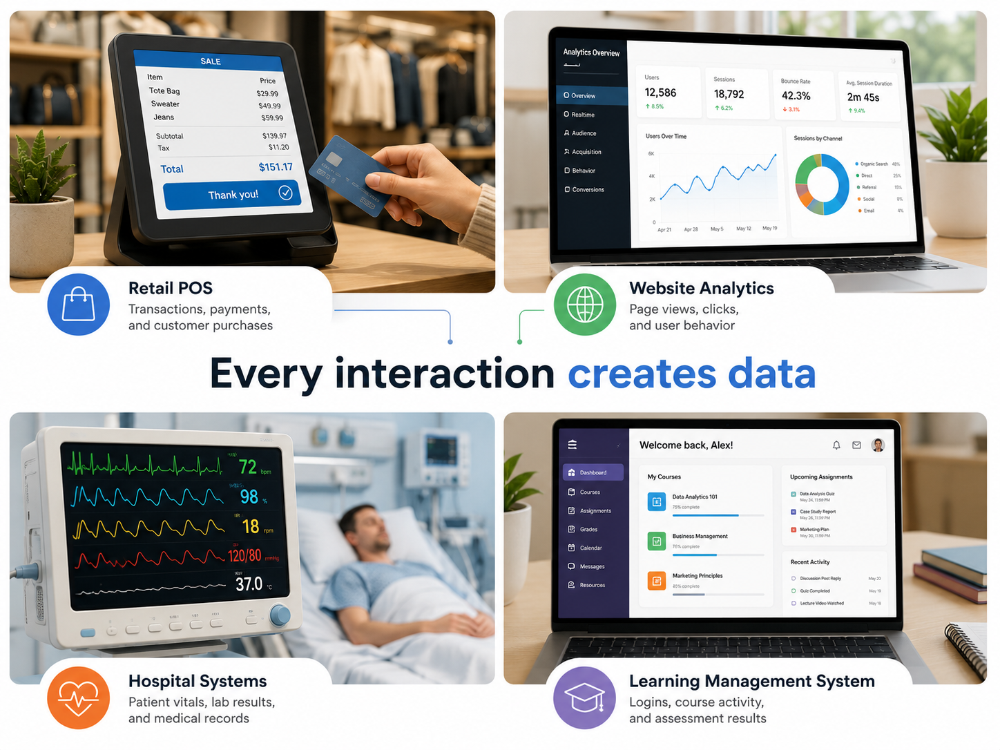
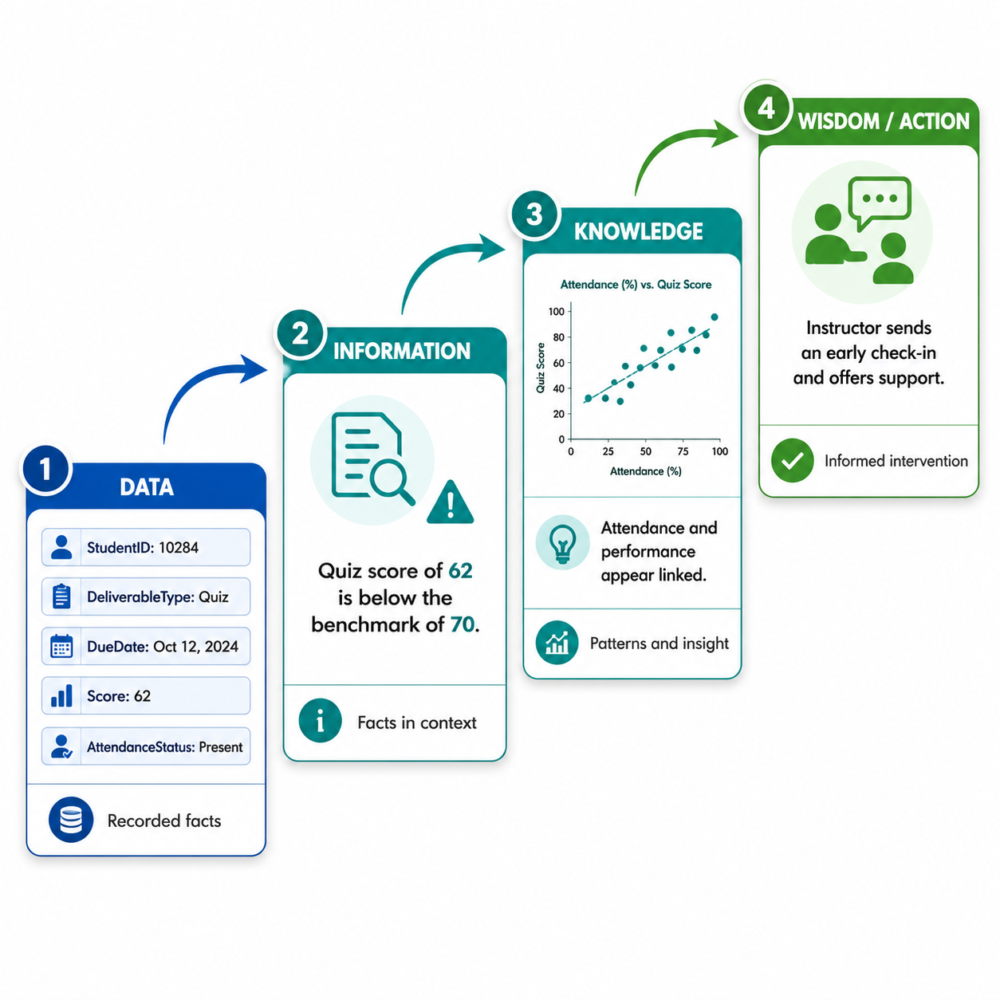
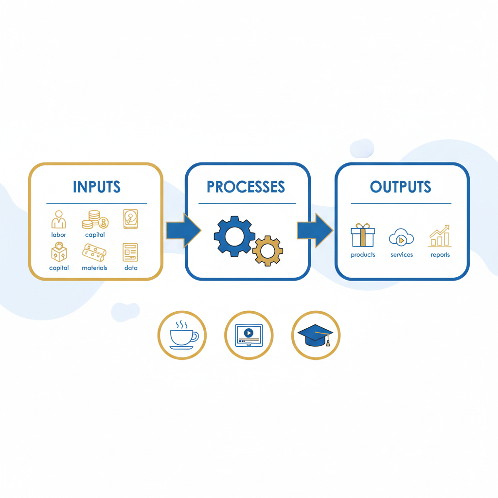
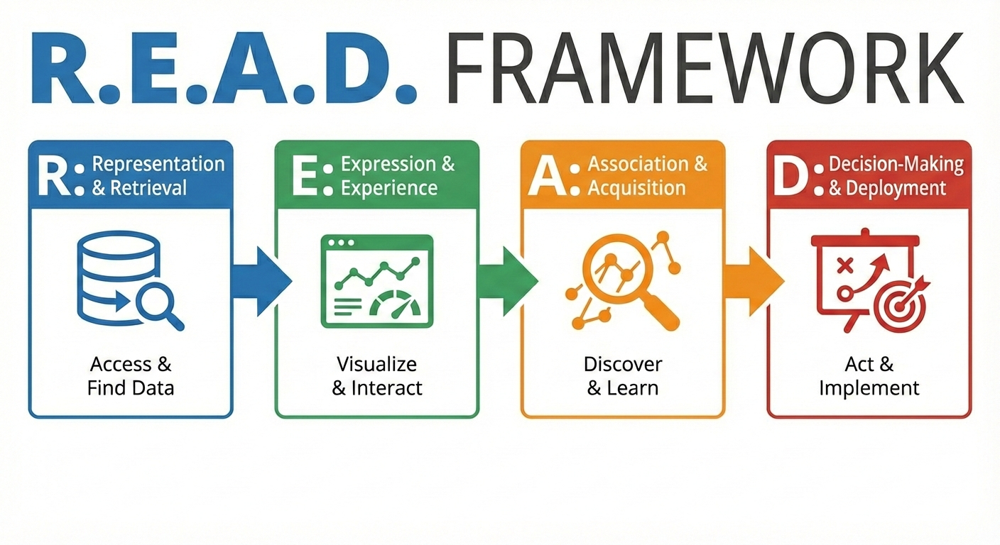

Chapter 2
Foundations of Information Systems
Generated from the latest available chapter draft and companion parts.
Chapter 2: Foundations of Information Systems
title: "Chapter 2: Foundations of Information Systems" author: "Nimrod Dvir, PhD" date: 2026-06-02 lang: en-US toc: true
How Data Drives Business Performance

As introduced in Chapter 1, this book follows a clear path: data becomes tables, tables form relationships, relationships enable queries, queries support analytics, and analytics inform decisions.

Chapter 2 explains why that path matters. It shows how information systems turn raw observations into business decisions. Along the way, it introduces two simple frameworks: the DIKW hierarchy (data, information, knowledge, wisdom) and the R.E.A.D. framework (representation and retrieval, expression and experience, association and acquisition, decision-making and deployment). The chapter also separates information technology (the tools) from the broader information system (the tools plus people, data, and processes). Finally, it explains why data quality and strategic alignment are managerial concerns, not just technical ones.
"G:\My Drive\0-Projects!-important\BITM330-book-drive.images\ch02\2-9.png"
Framing the Course Title
The course this book supports is called Business Information Technology Management. Each word in that title matters. Business reminds us that the starting point is not technology. The starting point is an organization that creates value under constraints. Information reminds us that data becomes useful when it is organized, interpreted, and connected to decisions. Technology reminds us that tools — databases, software, networks, analytics platforms — make information work scalable and repeatable. Management reminds us that every technology choice is also a resource decision, a people decision, and a strategy decision.
Together, those four words describe the work of turning data into performance. That is the arc this chapter, and this book, follows.
Before we move into databases, SQL, and analytics, we need a foundation.

Specifically, ask yourself whether you can answer these questions:
- What is data?
- What is a business?
- What is business performance?
- How can data improve business performance?
- What is an information system?
- What is information technology?
- What are Management Information Systems (MIS)?
- What is Business Information Technology Management (BITM)?
Those questions are the foundation of this chapter.

Figure 2.3 — Learning Objectives.
- define data, information, knowledge, and wisdom;
- explain how raw data becomes useful for business decisions;
- describe business performance and explain why it is multidimensional;
- explain how KPIs translate goals into measurable signals;
- define information systems and distinguish them from information technology;
- describe the five components of an information system;
- explain how MIS and BITM connect systems, management, and strategy.
Introduction: Why Foundations Matter
Every business activity leaves a trail.
A sale, a shipment, a website click, a customer complaint, a late assignment, a hospital visit, a delivery delay, or a payment record can all become data. These records may look small by themselves. But together, they allow organizations to see what is happening.
That is the starting point.
Data helps organizations observe activity. Information systems help organizations organize that activity. Managers use those systems to understand problems, evaluate options, and decide what to do next.
This is why information systems are not just technical tools. They are business systems. They shape what people can see, what they can measure, what they can trust, and what they can improve.
A coffee shop might use data to decide how much milk to order. A hospital might use data to manage staffing. A university might use data to identify students who need support. A retailer might use data to understand which products sell quickly and which sit on shelves. In each case, data becomes useful only when it is organized and connected to a decision.


This chapter builds the conceptual foundation for the rest of the book. Later chapters focus more directly on data types, databases, SQL, relational design, analytics, and strategy. Here, we begin with the larger logic: how data, systems, management, and performance fit together.
🔑 Key Takeaway: Data alone does not improve performance
Data becomes valuable only when people use information systems to organize it, interpret it, and act on it. Storing records is not the same as using them.

Figure 2.6 — Business activity creates data everywhere, and information systems make those records usable for decisions.Running example. Throughout this chapter, we will return to a single business: an online retailer that wants to improve sales, reduce delivery problems, and keep customers satisfied. The retailer captures raw transaction data, runs day-to-day operations, measures performance, and makes management decisions. Revisiting the same context makes it easier to see how the chapter's concepts fit together.
From Data to Business Meaning
The book is titled Using Data to Drive Business Performance. Before we go further, we need a clear idea of what data is and how it becomes meaningful in a business context.

What Is Data?
Data consists of raw observations, symbols, identifiers, measurements, and recorded facts that represent aspects of reality.
In a business setting, data can include:
- customer IDs;
- transaction amounts;
- product codes;
- timestamps;
- attendance records;
- appointment dates;
- inventory counts;
- ratings;
- addresses;
- payment statuses.
A single piece of data often means very little by itself. The number 42 could mean 42 dollars, 42 students, 42 minutes, 42 units sold, or 42 customer complaints. A date like 2026-03-08 might be a delivery date, a payment date, a birthday, or an appointment date.
Data needs context.
Context tells us what a value represents, where it came from, when it was recorded, and how it should be interpreted. Without context, data is just a recorded trace. With context, data can become evidence.
For example, a retailer may record that Product A sold 120 units last week. That number becomes more useful when the retailer also knows the prior week's sales, the product category, the price, the promotion history, and the inventory level. The value is no longer just a number. It becomes part of a business story.

Data matters because modern organizations depend on visibility. Managers cannot improve what they cannot observe, and they cannot observe at scale without records. Every interaction, workflow, and decision leaves a trace. Those traces become the raw material for measurement, analysis, and control.
That is why data is the starting point, not the endpoint.

what is data
The DIKW Hierarchy
What is data? What is information? What is knowledge? What is wisdom? These four questions sit at the heart of one of the most useful frameworks in information systems: the DIKW hierarchy (Ackoff, 1989).
The hierarchy can be understood through four guiding questions:
| Level | Guiding Question | Meaning |
|---|---|---|
| Data | What was recorded? | Raw observations, values, symbols, or facts |
| Information | What happened? | Data organized into a meaningful pattern or summary |
| Knowledge | Why is it happening? | Interpretation based on context, comparison, and experience |
| Wisdom | What should we do? | Judgment about action, priorities, and consequences |
A student example helps. A student receives an exam score of 68. That score is data. If the class average was 82 and the student missed most questions about SQL joins, the score becomes information. If the instructor recognizes that several students struggled with joins, that becomes knowledge about a learning gap. If the instructor adds a new practice activity before the next assessment, that is wisdom in action.
G:\My Drive\0-Projects!-important\BITM330-book-drive.images\ch02\data-iwsom.jpg
The same pattern appears in business. A grocery store records sales transactions. Those transactions are data. A report showing that dairy products sell faster on weekends is information. A manager recognizing that weekend demand is tied to family shopping patterns is using knowledge. Adjusting staffing and inventory before the weekend is a decision based on wisdom.

The DIKW Hierarchy. Figure 2.9 — The DIKW Hierarchy: Moving from data to information, knowledge, and wisdom.

The key point is simple: storing data is not the same as using data. Organizations create value when they move from records to interpretation and from interpretation to action.
The R.E.A.D. Framework
The DIKW hierarchy describes stages of meaning. But this book is also concerned with the organizational and technical work that makes those stages possible. That is why we introduce the R.E.A.D. framework.
Where DIKW describes stages of meaning, R.E.A.D. describes the work required to move through those stages.
| Stage | Name | What It Involves |
|---|---|---|
| R | Representation and Retrieval | Structuring raw inputs so data is accurate, accessible, and consistently stored. This is where database design and SQL begin. |
| E | Expression and Experience | Presenting information through forms, reports, dashboards, and interfaces that people can understand and use. |
| A | Association and Acquisition | Identifying patterns, relationships, and explanations that turn information into knowledge. Analytics and business intelligence emerge here. |
| D | Decision-Making and Deployment | Translating insight into action, strategy, process changes, or system improvements. |

The same four stages show up in very different settings. The two examples below — a university grading database and an online retailer — will both come back in later chapters.
| R.E.A.D. stage | Grading database example | Online retailer example |
|---|---|---|
| Representation and Retrieval | Grade records are entered consistently and stored in a structured database. | Orders, returns, payments, and shipping scans are captured in shared systems. |
| Expression and Experience | A report shows which students have missing assignments. | Dashboards show order volume, late shipments, and customer complaints. |
| Association and Acquisition | Patterns reveal that students who miss early assignments are more likely to fall behind later. | Analysis reveals that late deliveries spike when one warehouse runs low on staff. |
| Decision-Making and Deployment | The instructor reaches out earlier or redesigns the first two weeks of the term. | Managers reassign inventory, change staffing, and update delivery rules. |
DIKW explains how meaning develops. R.E.A.D. explains how organizations and systems help that development happen in practice. Later chapters return to these stages in more applied ways — Chapter 3 examines data itself in detail before the book moves into database design and SQL.


Why Data Quality Matters

The data-to-performance Chain.
Not all data is equally useful.
If data is inaccurate, incomplete, inconsistent, or outdated, every later step becomes weaker. A dashboard may look impressive, but if the data behind it is wrong, the dashboard only helps people make wrong decisions faster.
Four data quality dimensions matter throughout this book:
| Dimension | Meaning | Example Problem |
|---|---|---|
| Accuracy | Data matches reality | A customer address is entered incorrectly |
| Completeness | Required data is present | A patient record is missing allergy information |
| Timeliness | Data is current enough for the decision | Inventory data updates after orders are already placed |
| Consistency | The same idea is recorded the same way | One system uses "NY" while another uses "New York" |

Data quality is a management issue. Poor data quality distorts KPIs, misleads managers, frustrates customers, and reduces trust in systems. Good decisions require trustworthy data. Chapter 3 examines data quality, classification, and governance in more depth.

Business as a Performance System
What Is a Business?
To understand what information systems must support, we need a clear idea of what a business is. In this book, a business is not limited to a private company that earns profit. The term includes any organization that transforms resources into valued outcomes under constraints.
A business is an organization that creates value by transforming inputs into outputs under conditions of limited resources, competing priorities, and uncertainty.
That definition includes retailers, manufacturers, hospitals, nonprofits, schools, banks, and government agencies. Each of these organizations pursues goals, allocates resources, and works under constraints. Profit may matter in some cases, but the broader pattern is the same: organizations exist to create outcomes that matter to stakeholders.
Stakeholders are the people and groups affected by the organization's actions. They include customers, employees, owners, suppliers, students, regulators, patients, and the broader public. Because stakeholders care about different outcomes, business performance is always multidimensional. A hospital may track patient safety, operating efficiency, regulatory compliance, and financial sustainability at the same time. A university may track enrollment, retention, learning outcomes, and budget stability. A retailer may track revenue, margin, customer satisfaction, and supply reliability.
This is why data matters. Organizations need evidence about how well they are creating value, where processes are breaking down, and what adjustments are needed. Without that evidence, management depends too heavily on anecdote and guesswork.
The Input-Process-Output Model
A useful way to understand how organizations work is the Input-Process-Output (IPO) model.

Every business takes in inputs, transforms them through processes, and produces outputs.
| IPO Element | Meaning | Business Example |
|---|---|---|
| Inputs | Resources used by the organization | Labor, materials, money, time, data |
| Processes | Activities that transform inputs | Production, service delivery, analysis, scheduling |
| Outputs | Results produced by the organization | Products, services, reports, experiences, decisions |
The IPO model gives students a practical mental map. Instead of seeing an organization as a confusing set of departments, the model highlights transformation. Something enters the system. Work is performed. Something of value comes out.
The model also helps explain why data belongs in a business textbook. Data can function as both an input and an output. Organizations use data as an input to decisions, planning, and analysis. At the same time, every business process produces new data as an output. Data is part of a continuous feedback loop, not a one-time resource.
For the online retailer, inputs include inventory, labor, warehouse space, software tools, and incoming customer orders. Processes include payment validation, picking, packing, shipping, and customer-service follow-up. Outputs include delivered orders, updated inventory levels, customer experiences, and new operational data that managers can analyze.
The IPO model will appear again when the chapter defines information systems. That is not an accident. Information systems are themselves organized arrangements that take in inputs, process them, and generate outputs.
Efficiency, Effectiveness, and KPIs
Once a business is understood as a value-creating system, the next question is how to judge whether it is performing well.
Business performance refers to how well an organization achieves important goals for relevant stakeholders. Performance is not the same as activity. An organization can be busy without being effective. It can produce many reports without improving decisions. It can use advanced technology without improving outcomes.
Two of the most important dimensions of performance are efficiency and effectiveness.
- Efficiency means doing things right. The focus is on using resources well and reducing waste.
- Effectiveness means doing the right things. The focus is on achieving goals that actually matter.
Organizations usually need both. A company can be efficient but ineffective if it produces the wrong product well. A university office can process forms quickly but still fail students if the process does not solve their problems.
Because performance is complex, organizations use Key Performance Indicators (KPIs). A KPI is a quantifiable signal used to evaluate progress toward an important goal.
| Goal | Possible KPI |
|---|---|
| Improve customer loyalty | Customer retention rate |
| Improve delivery reliability | On-time delivery percentage |
| Improve student success | Course completion rate |
| Improve profitability | Gross margin |

A KPI is useful only when people understand what it means, where the data comes from, and what decision it should support. A trustworthy KPI usually needs several design decisions behind it: a clear business goal, a precise formula, a reliable data source, a refresh cycle, an owner who is expected to act on it, and thresholds that indicate acceptable or risky performance.

When KPI design is sloppy, behavior gets distorted. If a call center tracks average handling time without tracking resolution quality, employees may rush customers off the phone. If a school tracks pass rates without checking learning depth, instructors may lower standards. Metrics shape attention, incentives, and action, which is why measurement is always a management issue, not just a reporting issue.
📊 Business Insight: KPIs shape behavior
When you evaluate a KPI, ask not only what it measures but also what behavior it encourages. A KPI that looks neutral on a dashboard can drive teams toward speed at the cost of quality, or short-term wins at the cost of long-term performance.

The Data-to-Performance Chain
The central logic of this chapter can be stated simply:
Data -> Information -> Insight -> Decision -> Performance
Data is captured from activity. Data becomes information when it is organized and placed in context. Information becomes insight when people recognize a pattern, cause, risk, or opportunity. Insight becomes valuable when it informs a decision. A decision matters when it changes behavior, operations, or outcomes.
Consider a delivery company. Each delivery creates data: pickup time, drop-off time, route, driver, distance, customer rating, and delay reason. A weekly report showing delays in one region is information. Further analysis that reveals warehouse congestion is insight. A staffing or routing change is a decision. If on-time delivery improves, the decision affects performance.
This chain helps explain why the book connects technical and managerial topics. A database is not valuable merely because it stores records. It is valuable when its structure helps an organization ask better questions and make better decisions.

Management as Decision-Making
Management can be understood as decision-making under uncertainty (Simon, 1997). Managers decide what to prioritize, what to measure, how to allocate resources, when to intervene, and how to evaluate results.
Information improves management because it reduces uncertainty and makes decisions more disciplined. Without reliable information, managers may depend too heavily on guesses, habits, anecdotes, or the loudest voice in the room.
Organizations make decisions at different levels.
| Decision Level | Time Horizon | Common Information Need | Example |
|---|---|---|---|
| Operational | Short term | Current status, alerts, task queues | Which orders need attention today? |
| Managerial | Medium term | Reports, KPIs, trends, comparisons | Which department is falling behind? |
| Strategic | Long term | Forecasts, scenarios, investment analysis | Should we open a new location? |
The same data can support more than one level. The difference is often aggregation, interpretation, time horizon, and responsibility. In the online-retailer example, one order record can trigger an operational alert about a late shipment, feed a managerial dashboard on warehouse performance, and contribute to a strategic discussion about whether the company should invest in a new fulfillment center.

Information Systems as Organizational Engines
Data alone does not create value. Organizations need systems that help people capture, store, process, retrieve, interpret, and use data consistently.
Why Data Alone Is Not Enough
Small groups can sometimes manage with memory, informal conversations, and ad hoc spreadsheets. Larger organizations cannot. As operations grow, problems of scale, consistency, accountability, and coordination become too large for informal methods.
Several recurring organizational problems explain why formal systems are necessary:
- Scale: people cannot manually coordinate large volumes of activity.
- Memory: organizations need records that outlast individual employees.
- Visibility: managers need reliable operational truth, not scattered stories.
- Control: standardized processes make auditing, comparison, and accountability possible.
- Learning: improvement depends on comparing results over time.
An information system makes information work repeatable. The same event can be recorded the same way, calculated the same way, and reported the same way across time and users. That repeatability turns information work from an improvised task into an organizational capability. The online retailer might begin with a spreadsheet that tracks late orders once a week. A full information system makes that calculation reliable every day, across customer service, warehouse, and management teams, using the same data definitions and business rules.
Information Behavior: How People Search for and Use Information

Systems work better when designers understand the human side of information. In information science, information behavior refers to how people recognize information needs, search for information, encounter information, retrieve it, evaluate it, and use it in context (Wilson, 1981, 2000).
For this chapter, three ideas are especially useful.
Information need. An information need is the gap between what a person knows and what they need to know in order to solve a problem, answer a question, or make a decision. Wilson (1981) argued that understanding a need means understanding three things together: why the person decided to look, what purpose the information will serve, and how it will be used once found. A dashboard pulled up without those three answers is activity, not inquiry.
Information-seeking behavior. Information-seeking behavior is the set of actions people take to search for, find, retrieve, and evaluate information — running a query, opening a report, filtering a dashboard, scanning notes, or asking a colleague. Seeking is usually better understood as a session than as a single search: people refine queries, change directions, and combine sources as their understanding develops (Wilson, 2000). Not all useful information comes from active search either — people also encounter it through alerts, peer conversations, or dashboards they happen to glance at.
Information use. Information use is what people actually do with information once they have it: decide, explain, share, act, redesign a process, or set it aside. A report that is never used does not improve performance, no matter how accurate it is.
| Concept | Meaning | Online-retailer example |
|---|---|---|
| Information need | The gap between what a person knows and what they need to know in order to solve a problem, answer a question, or make a decision. | A customer-service lead notices a spike in complaints and needs to know whether one warehouse, carrier, or product category is causing the issue. |
| Information-seeking behavior | The actions people take to search for, find, retrieve, and evaluate information. | The lead opens a dashboard, filters late shipments by warehouse and week, checks recent complaint notes, and asks a logistics manager for context. |
| Information use | What people do with information once they have it: decide, explain, share, act, redesign a process, or ignore it. | The lead reassigns support staff, updates customer-service scripts, and escalates the warehouse staffing problem to operations. |
Information behavior matters because a database is not useful merely because it contains records. It is useful when people can connect those records to real questions and actions. Barriers such as unclear labels, poor search tools, missing permissions, inconsistent definitions, or low trust in the data can prevent users from moving from information need to information use.

📊 Business Insight: Information that no one uses has no value
When you evaluate a report or dashboard, ask three questions in order: What need does it serve? How will people find and read it? What decision will it support? If any answer is unclear, the system is producing data, not information.
These three ideas map directly onto R.E.A.D. Representation and Retrieval supplies the records people search through. Expression and Experience shapes how information is encountered, scanned, and trusted. Decision-Making and Deployment is information use in action. The rest of the book moves through these layers in order: Chapters 4 and 5 build the retrieval layer with databases and SQL; Chapters 9 and 14 shape the experience layer with analytics and Power BI; later strategy and decision chapters return to how information is actually used. Designing a good information system means designing for all three.

What Is an Information System?
An information system is a coordinated arrangement of people, processes, data, and technology that collects, processes, stores, and distributes information to support coordination, control, analysis, and decision-making (Laudon & Laudon, 2024).
The important word is coordinated. An information system is not just software. It includes the people who use it, the rules they follow, the data they enter, and the technology that supports the work.
A full information system can be described as a five-part operating loop:
- Input — capturing raw data from business activity (orders, scans, entries, sensors).
- Processing — checking, calculating, sorting, and organizing that data into usable form.
- Storage — keeping data accessible, secure, and consistent over time.
- Output — delivering information through reports, dashboards, alerts, and recommendations.
- Feedback — using output to adjust inputs, processes, or decisions, closing the learning loop.
Feedback is the piece that ties information systems back to managerial learning and performance improvement. Without feedback, an information system is a one-way pipeline. With feedback, it becomes a cycle — and cycles improve over time.
For example, a customer relationship management (CRM) system is not only CRM software. The full system also includes customer data, sales workflows, follow-up rules, dashboards, training, and reporting routines. Failures often come from unclear processes, weak data standards, poor training, or lack of trust in the output — not from the software alone.

An information system follows the same input-process-output logic as the business processes it supports.
Information Systems vs. Information Technology
Students often use information system and information technology as if they mean the same thing. They are related, but they are not identical.
| Term | Meaning | Example |
|---|---|---|
| Information Technology (IT) | The technical tools and infrastructure used to support digital work | Software, servers, networks, devices, databases |
| Information System (IS) | The full arrangement of people, processes, data, and technology that supports work and decisions | A complete sales process that uses software, shared data standards, dashboards, and follow-up routines |


This distinction matters because many organizations treat system problems as software problems. Sometimes the real issue is unclear data, weak processes, poor training, low trust, or a mismatch between the system and the work.
❌ Avoid: Buying a tool is not building a system
A CRM application is information technology. A sales process that defines what customer stages mean, trains staff to update records consistently, uses dashboards in weekly review meetings, and follows up on overdue opportunities is an information system. Buying the tool does not guarantee the system.
The Five-Component Framework
One useful way to describe an information system is the five-component framework (Kroenke & Boyle, 2021).
| Component | Meaning | Example |
|---|---|---|
| Hardware | Physical devices | Computers, servers, scanners, phones |
| Software | Programs and applications | Databases, operating systems, business apps |
| Data | Recorded facts and values | Transactions, customer records, grades, inventory |
| Processes | Rules and workflows | Approvals, standards, procedures, reporting routines |
| People | Users and stakeholders | Employees, managers, analysts, customers, administrators |
All five components matter. A system can fail because the hardware is unreliable, the software is confusing, the data is inaccurate, the process is weak, or people do not trust or use the system well. A database project is therefore never only a database project. It is also a people project, a process project, and a decision-making project.

People are especially important because they define goals, interpret outputs, and choose actions. Hardware and software can automate parts of the process, but they do not decide what the organization should value or how competing goals should be balanced. That is why business courses pay such close attention to the managerial side of systems.
In the online-retailer example, hardware includes scanners, warehouse devices, and servers. Software includes the storefront, payment platform, order-management system, and database. Data includes orders, inventory counts, delivery timestamps, and complaint records. Processes define how orders are validated, packed, shipped, and refunded. People include customers, warehouse staff, managers, analysts, and support agents. If delivery times worsen, the cause could lie in any one of the five components or in the relationships among them.

💡 Tip: Remember the five components with a simple frame
Hardware is the machinery. Software is the logic. Data is the raw material. Processes are the rules. People give the system purpose. All five must work together for the system to deliver value.
Managing Information Systems for Business Value

Information systems matter because they make better managerial action possible — not because the technology exists on its own. A system that no one trusts, no one uses, or no one connects to a real decision is just overhead. The next sections explore how organizations manage information systems to create business value: through MIS (managerial use of information), BITM (strategic management of technology), alignment (fitting systems to goals), and governance (deciding who decides).
Putting the Terms Side by Side
Before going deeper, it helps to see the four key terms — IT, IS, MIS, and BITM — compared directly.
| Term | Focus | Central question | Example |
|---|---|---|---|
| Information Technology (IT) | Tools and infrastructure | What technology do we have? | Servers, networks, software licenses, cloud platforms |
| Information System (IS) | Coordinated people-process-data-technology arrangement | How do we turn data into decisions? | A complete sales system with software, workflows, data standards, and training |
| Management Information Systems (MIS) | Using information for management | What information do managers need, and how do they get it? | Dashboards, reports, KPIs that support planning, organizing, and controlling |
| Business Information Technology Management (BITM) | Managing technology as a strategic resource | Which technologies should we invest in, and how do we govern them? | Technology roadmaps, investment decisions, governance structures, risk management |
IT is the toolbox. IS is the workshop. MIS is the manager's view of the workshop. BITM is the leadership's strategy for the toolbox and the workshop together.
Management Information Systems (MIS)
Management Information Systems (MIS) is the field of study and practice focused on using information systems to support managerial work, organizational coordination, and business performance.
MIS asks practical questions:
- What information do managers need?
- How should that information be captured?
- How should it be reported?
- Who should have access to it?
- How can systems improve coordination and decisions?
MIS is not just about tools. It is about how information supports management. It supports planning through forecasting and trend analysis, organizing through workflow visibility and resource allocation, leading through communication and accountability, and controlling through KPIs, exception reports, and audit trails. An operations manager who uses daily reports on late shipments, return rates, and packing errors to decide whether to reassign labor or adjust service promises is doing the work MIS is designed to support.
Business Information Technology Management (BITM)
Business Information Technology Management (BITM) focuses on how organizations select, design, govern, and adapt technology to support business goals.
BITM is closely related to MIS, but it puts more emphasis on managing technology as a business resource. It asks which technologies an organization should invest in, how risks should be managed, and how technology value should be measured.
In simple terms, MIS focuses on how information systems support management. BITM focuses on how technology choices are managed as strategic business decisions. The retailer uses MIS when managers monitor late shipments and return rates. It uses BITM when leadership decides whether to adopt a new order-management platform, redesign fulfillment workflows, retrain staff, and define who can approve major system changes.

Strategic Alignment
Strategic alignment means that information systems and technology investments should support the organization's goals, structure, and strategy (Henderson & Venkatraman, 1993).
A system can be technically impressive and still fail if it does not fit the organization. A retailer that competes on low cost needs systems that support inventory control and operational discipline. A hospital that competes on quality needs systems that support accurate records, safe care, and coordinated decisions. The better question is not only, "Does the system work?" The better question is, "Does the system help the organization do what it is trying to do?"

Strategic alignment can support several common business aims:
- Cost leadership through efficiency, standardization, and waste reduction.
- Differentiation through service quality, personalization, and customer experience.
- Innovation through new business models, platforms, and digital capabilities.
If the online retailer competes on fast and reliable delivery, its systems must support accurate inventory visibility, dependable checkout, timely shipping updates, and rapid issue resolution. If those capabilities are weak, the strategy fails in execution no matter how good the technology looks on paper.

Governance and Accountability
IT governance refers to the decision rights, accountability structures, priorities, and oversight mechanisms used to guide technology investments and system use (Weill & Ross, 2004).
Governance is not the same as day-to-day system administration. Administration focuses on operating the systems well. Governance focuses on deciding whether the organization is investing in the right systems, under the right controls, for the right reasons. Governance asks:
- Who decides which systems are built or purchased?
- Who owns the data?
- Who is responsible for security?
- How are risks managed?
- Who can change records, reports, or system settings?
- How does the organization know whether a system creates value?

These questions matter because technology value is often harder to judge than managers expect. Brynjolfsson's work on the productivity paradox (1993) reminds us that the benefits of IT may be delayed, distributed, or difficult to isolate. A support platform may not increase revenue immediately, but it may reduce churn, improve retention, or lower error rates over time. Governance helps organizations define what value means before disappointment sets in.
Governance also matters because systems shape trust and accountability. Access controls, audit logs, data definitions, approval workflows, and ownership assignments all determine whether a system is safe, fair, and reliable. A technically capable system can still fail if no one knows who is responsible for data quality, security, or follow-up action.

Foundations That Carry Forward
Organizations now work with cloud platforms, artificial intelligence, big data analytics, Internet of Things devices, automation tools, and digital transformation initiatives. These tools can be powerful, but they do not remove the need for strong foundations. Artificial intelligence still depends on data quality. Cloud systems still require governance. Dashboards still require clear definitions. Automation still requires good process design.
ℹ️ AI connection: New tools, same foundations
Generative AI assistants can draft reports, summarize dashboards, and suggest queries. They still depend on the same foundations this chapter introduced: clean data, clear processes, sensible KPIs, and governance over who can act on what. When AI is added to a weak information system, it scales the weaknesses too.
The tools change. The core challenge remains. Organizations still need to turn data into useful, trustworthy, actionable intelligence.

Apply the Concepts
Before moving on, test your understanding by working through a short exercise. Choose a business you know — a coffee shop, a campus office, a delivery app, a streaming service, or any organization you interact with regularly. For that business, answer these five questions in order:
- Identify a business need. What problem or opportunity does the organization face?
- Identify relevant data. What records, measurements, or observations would help address that need?
- Trace the DIKW path. How would that data become information, knowledge, and a possible decision?
- Name the five IS components. What hardware, software, data, processes, and people would the supporting system need?
- Name the performance outcome. What KPI or result would tell you whether the system improved performance?
This exercise is not about getting a perfect answer. It is about practicing the habit of connecting data, systems, and decisions — the habit this entire book is designed to build.
The data-to-performance Chain.
Chapter Summary
Chapter 2 explained why information systems matter for business performance.
The chapter began with the basic question of what data is and how it gains meaning. It used the DIKW hierarchy to show how raw records can become information, knowledge, and wisdom. It then introduced the R.E.A.D. framework to show the organizational and technical work required to move through those stages in practice.
The chapter then defined a business as a value-creating system that transforms inputs into outputs under constraints. The Input-Process-Output model offered a simple way to understand that transformation. The discussion of efficiency, effectiveness, KPIs, and decision levels showed how organizations judge whether they are performing well and how the same data supports different kinds of decisions.
From there, the chapter explained why organizations need information systems — and what those systems actually are. It distinguished information systems from information technology, added the five-part operating loop (input, processing, storage, output, feedback), and used the five-component framework to show that hardware, software, data, processes, and people all matter.
Finally, the chapter connected systems to management with a side-by-side comparison of IT, IS, MIS, and BITM. MIS emphasizes the managerial use of information. BITM emphasizes technology as a strategic business resource. Strategic alignment explains why systems must fit organizational goals. IT governance explains how decision rights, accountability, risk, and value review shape results.
This foundation matters because the rest of the book builds directly on it. Chapter 3 examines data itself — classification, structure, metadata, and governance. Chapter 4 introduces databases as the core technology for reliable data management. Every later chapter — on SQL, the relational model, normalization, analytics, and strategy — depends on the ideas established here: that data gains meaning through organization, that systems are more than tools, and that performance improves when managers connect information to action.

The Data-to-Performance Chain.
References
Ackoff, R. L. (1989). From data to wisdom. Journal of Applied Systems Analysis, 16(1), 3-9.
Brynjolfsson, E. (1993). The productivity paradox of information technology. Communications of the ACM, 36(12), 66-77.
Henderson, J. C., & Venkatraman, N. (1993). Strategic alignment: Leveraging information technology for transforming organizations. IBM Systems Journal, 32(1), 4-16.
Kroenke, D. M., & Boyle, R. J. (2021). Experiencing MIS (9th ed.). Pearson.
Laudon, K. C., & Laudon, J. P. (2024). Management information systems: Managing the digital firm (18th ed.). Pearson.
Simon, H. A. (1997). Administrative behavior: A study of decision-making processes in administrative organizations (4th ed.). Free Press.
Weill, P., & Ross, J. W. (2004). IT governance: How top performers manage IT decision rights for superior results. Harvard Business School Press.
Wilson, T. D. (1981). On user studies and information needs. Journal of Documentation, 37(1), 3-15. https://doi.org/10.1108/eb026702
Wilson, T. D. (2000). Human information behavior. Informing Science, 3(2), 49-56.
*
Let's Build
Let's Build — Managing a Course as a Business System

Chapter 2 introduced a lot of vocabulary quickly: business performance, KPIs, decisions, processes, the DIKW hierarchy, R.E.A.D., information behavior, and the five components of an information system. Each idea makes sense on its own; the hard part is seeing how they fit together. This Let's Build forces that connection by applying the major Chapter 2 ideas to one example you already know intimately — this course — and using it to sketch the logic that the rest of the book will turn into a working database.
Main chapter file: ch02-main-2026-05-21.md Companion lab: Lab 02 — Managing PetVax as a Business System (Brightspace quiz + Google Doc deliverable)
What You'll Build
A short thinking workbook — a Google Doc you keep for yourself — that turns this course into a worked example of every major idea from Chapter 2. You will not build tables, schemas, or software yet. You will build the logic that the rest of the book will eventually turn into a database.
There is no submission for this Let's Build. Lab 02 is where you do this work for a grade, on a different scenario (PetVax, a small veterinary clinic).
What You'll Need
- The Chapter 2 main reading.
- A blank Google Doc titled
LB02 — Course as a System — <Your Name>. - About 45-60 minutes.
- Your own honest answers. The point is to think, not to be right on the first try.
How To Use This File
Every question follows the same pattern:
- Ask — a question is posed.
- Try it — you answer first in your workbook.
- Guided answer — a short model answer to compare against.
- Concept connection — the Chapter 2 idea this question is teaching.
- Reflection — a quick check before moving on.
Do not skip ahead to the guided answer. The model answer is most useful after you have written something of your own.
The Course as a System
We usually think of a course as a class on a schedule. In Chapter 2 terms, a course is also a business-like system: it has goals, stakeholders, inputs, processes, outputs, performance measures, and decisions. This section makes that frame explicit.
If this course were a business, what would count as good performance?

Business questions become more useful when they can be translated into structured data and analysis.
Try it. In your workbook, write 2-3 sentences. Do not just say good grades. Push on what the course is trying to accomplish.
Guided answer. Good performance means the course is helping students actually learn the material, stay engaged with it, build skills they can use later, and finish in a position to apply what they learned. Grades are one signal of that, but they are not the whole story. A course where everyone scores 90 percent because the quizzes were trivial is not performing well. A course where students struggle but build real skill might be performing better than its averages suggest.
Concept connection. Chapter 2 frames every organization as a system with goals, stakeholders, and measurable outcomes. A course fits that frame. Defining performance is the first design decision — everything else (what to measure, what to record, what to act on) depends on it.
Reflection. Did you define performance only as grades, or did you include learning, engagement, and skill?
Who are the stakeholders, and what does each one need from the course?
Try it. List the stakeholders. For each, write one sentence about what they need to know.
Guided answer. The two primary stakeholders are:
- Students need to know where they stand, what is missing, how they are doing in different categories, and what to do next.
- Instructor needs accurate records, reliable calculations, fast summaries, and early signals when a student may need help.
Several other stakeholders also depend on the course, even if they interact with it less directly: teaching assistants (grading and feedback), the department head and dean (program quality, accreditation, comparisons across sections), parents (often paying tuition and asking how things are going), peer students in later courses (who inherit whatever skills this course built or failed to build), and the ITS team (which keeps Brightspace, email, and campus accounts running). Same course, very different information needs.
Concept connection. Chapter 2 defines a stakeholder as anyone who affects or is affected by an organization's activities. One system usually serves several stakeholders at once, with different summaries and different decisions for each.
Reflection. Whose needs did you forget? Most students remember themselves and the instructor and stop there.
From Performance to KPIs to Decisions
If performance is the goal, KPIs are how we make performance visible, and decisions are how we act on what we see. This section forces the link between the three.
What KPIs would tell you the course is performing well?
Try it. Brainstorm 5-7 measures. Push past grades. Think about engagement, preparation, participation, and risk.
Guided answer. A useful first KPI set goes well beyond grades:
- Current weighted average — overall performance so far.
- Missing deliverables count — workflow and completion behavior.
- Attendance rate — physical or virtual presence.
- Participation rate — questions asked, discussion contributions.
- Reading and material access — did students open the assigned chapter, video, or Brightspace page?
- Lab and assignment completion rate — by category, not just overall.
- Improvement over time — is a student trending up or down?
- Risk indicators — combinations like no submission in two weeks AND falling average.
Grades alone are a lagging signal. Most of these other measures appear before a grade drops, which is why they are worth tracking.
Concept connection. Chapter 2 argues that KPIs translate goals into measurable signals, and that good KPI design is a managerial choice. What you choose to measure shapes attention, and attention shapes behavior.
Reflection. Which of your KPIs would change instructor behavior if it went red?
For each KPI, what decision could the instructor actually make?
Try it. Take 4-5 KPIs from the list above. For each, write the decision it would support if it went red.
Guided answer.
| KPI | Decision it supports if it goes red |
|---|---|
| Low quiz scores on one topic | Reteach the topic; revise the quiz; add practice material |
| Low attendance | Check engagement; review class pacing; reach out individually |
| Low reading/material use | Improve visibility; explain why the reading matters; rework the assignment that depends on it |
| Missing labs | Contact the student early; adjust reminders; check for a structural issue (unclear submission, broken link) |
| Low participation | Redesign discussion format; add small-group structure; lower the barrier to speaking |
| Risk indicator triggered | Personal outreach; referral to advising or tutoring |
Concept connection. This is the data-to-performance chain from Chapter 2 in miniature. A KPI is only useful if it points to a decision. A dashboard tile with no decision attached is decoration, not management.
Reflection. Did any of your KPIs not connect to a decision? Those are candidates to drop.
Quick classify — is each item Data, a KPI, or a Decision?
Students consistently blur these three. Before moving on, label each item below.
Try it. For each row, write Data, KPI, or Decision in your workbook.
| Item | Data, KPI, or Decision? |
|---|---|
| Maya scored 85 on Quiz 1 | |
| Average quiz score this term | |
| Missing-deliverables count | |
| The instructor emails students with two missing assignments | |
| The instructor reteaches a topic after low quiz scores |
Model answers. Data, KPI, KPI, Decision, Decision. If you missed one, slow down — this distinction drives the rest of the activity.
Concept connection. Data is a single recorded fact. A KPI is a measure built from many facts to make performance visible. A decision is the action a person takes because of what the KPI shows. Mixing them up is how dashboards end up full of numbers nobody acts on.
Reflection. Which of the three is hardest for you to spot in everyday life — raw data, the measure built from it, or the decision it should drive?

DIKW Grading Database
Where the Evidence Comes From
KPIs do not appear from nowhere. Every measure depends on a business process that produces a record. If the process is sloppy, the record is sloppy, the KPI is sloppy, and the decision is sloppy.
What course processes generate the evidence behind your KPIs?
Try it. List the activities that happen in this course. For each, write what record it produces.
Guided answer.
| Process | Record it creates |
|---|---|
| Reading the assigned chapter | Brightspace page-view log |
| Showing up to class | Attendance mark for that session |
| Asking or answering questions | Participation note or chat log |
| Submitting an assignment or lab | Submission record with timestamp |
| Grading a deliverable | Score, comment, possibly a rubric row |
| Returning feedback | Feedback record visible to the student |
| Reaching out to a struggling student | Email log, advising note |
Notice that none of these records appear in the database — they happen first in the world, and then somebody captures them. The capture step is where most data quality lives or dies.
Concept connection. Chapter 2's IPO model treats every organization (and every information system inside it) as turning inputs into outputs through a process. The records that fill the Grading Database are the outputs of course processes. Weak processes produce weak data, no matter how good the database design is.

The IPO model: every system turns inputs into outputs through a process.Reflection. Which process in your list is the most fragile? Where is data most likely to be missed or recorded inconsistently?
From Records to Action
So far you have performance, KPIs, decisions, processes, and records. This section asks the harder question: how do records become action? This is where DIKW and R.E.A.D. earn their keep.
Pick one KPI. Climb the DIKW ladder for it.
Try it. Choose one KPI (the missing-deliverables count is a good one) and fill in the four levels.
Guided answer (using missing-deliverables count).
| DIKW Level | In the course | Guiding question |
|---|---|---|
| Data | A single submission record — or its absence — for one student on one deliverable | What was recorded? |
| Information | A list of every student with the number of missing deliverables this term | What happened? |
| Knowledge | A pattern: students who miss early-term work are far more likely to fail the course | Why is it happening? |
| Wisdom | Decision: contact at-risk students by Week 4 instead of Week 10 | What should we do? |
Concept connection. DIKW is not a vocabulary exercise. It is a ladder, and every step requires work — counting, comparing, interpreting, deciding. The Grading Database is valuable only because it lets people climb that ladder reliably.
Reflection. At what step on your ladder does judgment start to matter more than software?
Trace the same KPI through R.E.A.D.
Try it. Map your KPI to the four R.E.A.D. stages.
Guided answer (still using missing-deliverables count).
| R.E.A.D. stage | What happens here |
|---|---|
| Representation and Retrieval | Record submissions, due dates, and student identifiers so the system can later answer "who is missing what?" |
| Expression and Experience | Display a missing-work view or dashboard the instructor can scan in under a minute |
| Association and Acquisition | Spot the pattern that missing work clusters early in the term and predicts later trouble |
| Decision-Making and Deployment | Send outreach, adjust deadlines, revise reminder structure, then watch whether the pattern improves |
Concept connection. Chapter 2 pairs DIKW and R.E.A.D. on purpose. DIKW describes the stages of meaning. R.E.A.D. describes the organizational and technical work required to move through those stages. One is the staircase, the other is the climbing.

❓ Question: Which R.E.A.D. stage in your trace depends most on human judgment, and which depends most on the system?
Information Behavior
Who needs this information, why, and where do they look for it?
Try it. For your KPI, write one or two sentences for the instructor and one or two sentences for the student.
Guided answer. The instructor needs missing-work information to intervene early, so they look at it weekly in a Brightspace report or a custom view. A student needs the same information to recover before grades collapse, so they look in the Brightspace "Grades" tab — usually on their phone, often the night before something is due. Teaching assistants, advisors, and parents may also have an interest, but their needs are narrower and less frequent.
Concept connection. This is information behavior from Chapter 2: people recognize a need, seek information, process what they find, and apply it. The same data feeds different people through different channels for different reasons. A system that ignores those differences will be technically correct and practically useless.
Reflection. If the only place this information lived were a printed report on the instructor's desk, who would lose access?
Naming the System
You have now described a working information system — you just have not named it yet. This section names it, diagnoses it with the five-component framework, and lists the data it would need to capture.
Diagnose the course system with the five-component framework.
Try it. For each component, write what currently exists in this course. Be concrete.
Guided answer.
| Component | In this course |
|---|---|
| Hardware | Students bring a mix of MacBooks, Windows laptops, and phones. Many do most of their Brightspace checking on a phone. The instructor uses a desktop with two monitors. Classrooms have a projector and instructor PC. |
| Software | Brightspace (LMS), email, Google Docs and Sheets, Microsoft Access on the instructor's machine, sometimes Excel for quick analysis, browser-based readings. |
| Data | Grades, attendance marks, submission timestamps, material-view logs, participation notes, contact information. |
| Processes | Submit assignments by 11:59 PM, attendance taken about ten minutes into class, late penalty applied consistently, weekly grading turnaround, end-of-term grade calculation. |
| People | Students, instructor, teaching assistants, advisors, department head, dean, parents, peer students in later courses, the ITS team that keeps Brightspace and accounts running. |
Concept connection. Chapter 2 defines an information system as a socio-technical arrangement — not just software. The five-component framework forces you to see all of it at once.
Reflection. Which component, in your version of this course, is the weakest link?
If student performance is poor, is that automatically a technology problem?
Try it. Write one paragraph. Use the five-component framework to push back on the easy answer.
Guided answer. Almost never. Poor performance can come from any of the five components. The hardware could be fine and the software flawless, but the process of submitting work might be unclear, the data about who is missing what might be inconsistent, or the people part — student engagement, instructor follow-up, TA grading speed — might be the actual bottleneck. "Buy better software" is usually the most expensive and least useful response to a system problem.
Concept connection. This is the chapter's distinction between information systems and information technology. Technology is one component of five. Treating a system failure as a technology failure misdiagnoses most real cases.
Reflection. Name a past frustration you blamed on "the technology" that was probably actually about process or people.
Name the system. What data would it need to capture?
Everything you have described so far is a working information system. In the rest of this book we will call it the Grading Database. The name is misleading on purpose — it is not just a place to store grades. It is a course-performance information system that helps the instructor and students monitor learning, engagement, preparation, participation, and risk, and that helps everyone make better decisions because of what it shows.

Try it. Given the KPIs you chose and the decisions they support, list (in plain bullets, no tables) what the Grading Database would need to capture. No field types, no schema, no relationships yet.
Guided answer. At minimum, the Grading Database would need to capture:
- which students are enrolled;
- which deliverables exist, what category they belong to, and when they are due;
- whether each student submitted each deliverable, and the score they received;
- attendance for each class session;
- material- and reading-access events tied to a student and a moment in time;
- the weighting rules the course uses to combine all of the above into a grade.
That is the shopping list. Chapter 3 starts to wrestle with the shape that shopping list should take.
Concept connection. This closes the backward-design loop: performance → KPIs → decisions → processes → records → DIKW/R.E.A.D. → data the system needs. You did not start by listing data. You earned the list by working backward from what the course is trying to accomplish.
Reflection. Look at your list. Which item is most likely to be captured inconsistently in the real world?
Your Course Performance Logic Map
By the end of this activity, you should be able to summarize your whole chain of thinking on a single page. Fill this in for the KPI you traced across the earlier sections. Nothing to submit — the goal is that you can re-draw it from memory.
| Layer | Your answer |
|---|---|
| Course-performance problem | |
| KPI | |
| Raw data needed | |
| Information summary | |
| Knowledge / pattern | |
| Wisdom / decision | |
| Process that creates the data | |
| R.E.A.D. stage most involved | |
| Weakest five-component link | |
| Why this is an information system |
If any row is hard to fill in, that is the row to go back and re-think — it is usually a sign of a weak link in the chain.
Final Reflection
Write 4-5 sentences in your workbook answering one of these:
- Before this exercise, what did you think a "grading database" was for? Has that changed?
- If you had to choose one KPI to start with — knowing it would shape what the system measures and what the instructor pays attention to — which one would you choose, and why?
- Where in this course do you see the biggest gap between what is currently captured and what would be useful to capture?
Peek Ahead — Chapter 3
When you wrote your list of what the Grading Database needs to capture, you probably pictured something familiar: a Brightspace-style gradebook with one row per student and columns labeled Quiz 1, Quiz 2, Lab 1, and so on. That wide layout works fine for one section of thirty students. It quietly breaks the moment you add an assignment, run a second section, or try to answer a question like what is the average score across all quizzes? In Chapter 3 we will build exactly that wide gradebook in Google Sheets, feel the pain on purpose, and discover why rethinking the shape of the data unlocks everything that comes after.
What This Prepares You For
- Lab 02 asks you to run the same analysis for PetVax, a small veterinary clinic — different domain, same questions, graded deliverable.
- Chapter 3 moves your data-capture list into a flat spreadsheet and exposes its limits.
- Chapter 4 turns the cleaned-up list into the first real database tables in Access.
For now, the point is small but important: a database is the answer to a management question, not the starting point.
Chapter 2 Term Treasury - Foundations of Information Systems

| Term / Concept | Definition | Business Significance | Examples |
|---|---|---|---|
| Artificial Intelligence (AI) | Computer systems that recognize patterns, make predictions, generate content, or automate tasks that usually require human judgment. | AI tools depend on the same foundations as any information system — clean data, clear processes, sensible KPIs, and governance. When added to a weak system, AI scales the weaknesses too. | Generative AI assistants drafting reports, summarizing dashboards, or suggesting queries — all of which depend on trustworthy underlying data. |
| Association and Acquisition | The R.E.A.D. stage in which people and systems connect information, compare cases, identify patterns, and build deeper understanding. | Turns information into knowledge. Without this stage, organizations have reports but no insight — they know what happened but not why. | Analyzing late-delivery data and discovering the spike is tied to one understaffed warehouse. |
| Business | An organization that creates value by transforming inputs into outputs under conditions of limited resources, competing priorities, and uncertainty. | Defines the context information systems serve. Every system exists to help an organization create outcomes that matter — the system is never the goal. | Retailers, hospitals, universities, nonprofits, banks, and government agencies are all businesses in this sense. |
| Business Information Technology Management (BITM) | A managerial approach focused on selecting, designing, governing, and adapting technology as a strategic business resource. | Ensures technology investments are not just operational expenses but deliberate strategic choices aligned with business goals. | Leadership deciding whether to adopt a new order-management platform, redesign workflows, retrain staff, and assign approval rights. |
| Business Performance | The degree to which an organization achieves important goals for its stakeholders. | Defines what success looks like and why measurement matters. Without a clear definition of performance, systems have no purpose. | A hospital tracking patient safety, efficiency, compliance, and financial sustainability simultaneously. |
| Data | Raw observations, symbols, identifiers, measurements, and recorded facts that represent aspects of reality. | The starting point for every decision, report, and system. Data enables organizations to observe activity at scale instead of relying on anecdote and guesswork. | Customer IDs, transaction amounts, timestamps, inventory counts, attendance records, payment statuses. |
| Data Quality | The degree to which data is accurate, complete, timely, consistent, and fit for use. | Poor data quality distorts KPIs, misleads managers, frustrates customers, and erodes trust in systems. Good decisions require trustworthy data. | A customer address entered incorrectly (accuracy), a patient record missing allergy information (completeness), inventory data updated too late (timeliness). |
| Data-to-Performance Chain | The progression by which data becomes information, informs decisions, changes outcomes, and generates new data: Data → Information → Insight → Decision → Performance. | Explains why databases and analytics matter for business. A database is valuable only when its structure helps an organization ask better questions and make better decisions. | A delivery company tracking late shipments by region (information), discovering warehouse congestion is the cause (insight), and reassigning staff (decision) to improve on-time delivery (performance). |
| Decision-Making and Deployment | The R.E.A.D. stage in which understanding is turned into actions, policies, interventions, or system redesigns. | The payoff stage — where insight becomes change. Without deployment, even the best analysis produces no business value. | A manager reassigning inventory, changing staffing rules, and updating delivery promises after analyzing late-shipment patterns. |
| DIKW Hierarchy | A model showing how data becomes information, knowledge, and wisdom through context, interpretation, and judgment (Ackoff, 1989). | Provides the mental map for moving from raw records to actionable decisions. Every level adds meaning: Data (what was recorded), Information (what happened), Knowledge (why), Wisdom (what to do). | A student score of 68 (data), compared to a class average of 82 with missed SQL questions (information), revealing a learning gap (knowledge), leading to a new practice activity (wisdom). |
| Effectiveness | Doing the right things by pursuing goals that actually matter for stakeholders. | Efficiency without effectiveness is wasted effort. Organizations must ensure they are improving the right outcomes, not just optimizing activity. | A university office that processes forms quickly but still fails to solve students' underlying problems. |
| Efficiency | Doing things right by minimizing waste and using resources well. | Efficiency keeps organizations sustainable, but it must be paired with effectiveness. Measuring efficiency alone can drive the wrong behavior. | Reducing call handling time (efficiency) without checking whether customer problems are actually resolved (effectiveness). |
| Expression and Experience | The R.E.A.D. stage in which stored records are presented through reports, dashboards, interfaces, and alerts that people can interpret and use. | Shapes how information is encountered, scanned, and trusted. A poorly designed dashboard buries insight; a well-designed one surfaces it. | A report showing which students have missing assignments; a dashboard displaying late shipments by warehouse and week. |
| Feedback | The fifth step of the information system operating loop — using output to adjust inputs, processes, or decisions, closing the learning cycle. | Turns a one-way information pipeline into an improvement cycle. Without feedback, systems cannot learn; with feedback, they get better over time. | A late-shipment report that prompts a manager to reassign staff; the next report shows whether on-time delivery improved. |
| Five-Component Framework | A model of an information system built from five interdependent parts: hardware, software, data, processes, and people (Kroenke & Boyle, 2021). | Shows that system failures can come from any component. A database project is never only a database project — it is also a people project, a process project, and a decision-making project. | Hardware (scanners, servers), software (storefront, database), data (orders, inventory), processes (packing rules, refund workflows), people (staff, managers, customers). |
| Information | Data that has been organized and contextualized so it carries meaning. | Raw data becomes useful only when structured, summarized, and connected to a question. Information bridges the gap between recording and understanding. | A weekly report showing that dairy products sell faster on weekends, built from individual transaction records. |
| Information Behavior | How people recognize information needs, seek or retrieve information, interpret it, and use it in context (Wilson, 1981, 2000). | A database is useful only when people can connect its records to real questions and actions. Ignoring information behavior leads to dashboards nobody uses and reports nobody reads. | A customer-service lead noticing a complaint spike (need), filtering a late-shipment dashboard (seeking), and reassigning support staff (use). |
| Information System (IS) | A coordinated arrangement of people, processes, data, and technology that collects, processes, stores, and distributes information to support coordination, control, analysis, and decision-making (Laudon & Laudon, 2024). | The organizational engine that turns data into decisions. An IS is more than software — it includes the people who use it, the rules they follow, and the data they depend on. | A CRM system that includes the software plus customer data, sales workflows, follow-up rules, dashboards, training, and reporting routines. |
| Information Technology (IT) | The technical tools and infrastructure — software, servers, networks, devices, databases — used to support digital work. | IT is the toolbox, not the workshop. Buying a tool does not guarantee a working system. Distinguishing IT from IS helps organizations diagnose problems correctly. | A CRM application (IT) versus the complete sales process that uses it along with data standards, training, and review meetings (IS). |
| Input-Process-Output (IPO) Model | A framework showing how organizations or systems take inputs, transform them through processes, and produce outputs. | Gives students a practical mental map for understanding any organization. Highlights that data functions as both input and output — part of a continuous feedback loop. | Online retailer: inputs (inventory, labor, orders), processes (picking, packing, shipping), outputs (delivered orders, updated inventory, new operational data). |
| IT Governance | The decision rights, accountability structures, priorities, and oversight mechanisms used to guide technology investments and system use (Weill & Ross, 2004). | Ensures organizations invest in the right systems, under the right controls, for the right reasons. Governance defines who decides, who owns the data, and how value is measured. | A governance committee deciding who can approve major system changes, who owns customer data, and how security risks are managed. |
| Key Performance Indicator (KPI) | A quantifiable signal used to evaluate progress toward an important goal. | KPIs translate goals into measurable signals and shape behavior — what you measure drives what people pay attention to. Poor KPI design can encourage speed at the cost of quality. | Customer retention rate, on-time delivery percentage, course completion rate, gross margin. |
| Knowledge | Interpretation based on context, comparison, and experience that explains why something is happening (DIKW level 3). | Knowledge bridges information and action. It is the stage where patterns are recognized and causes are understood — the foundation for good decisions. | A manager recognizing that weekend dairy demand is tied to family shopping patterns, not random fluctuation. |
| Management Information Systems (MIS) | The field of study and practice focused on using information systems to support managerial work, organizational coordination, and business performance. | Focuses on the managerial use of information — what managers need to know, how they get it, and how systems improve planning, organizing, leading, and controlling. | An operations manager using daily reports on late shipments, return rates, and packing errors to decide whether to reassign labor. |
| R.E.A.D. Framework | A framework describing the four kinds of organizational and technical work needed to move from raw data to action: Representation and Retrieval, Expression and Experience, Association and Acquisition, and Decision-Making and Deployment. | Explains how organizations build the engine that DIKW describes. Tells students what work is needed at each stage — databases and SQL for R, dashboards for E, analytics for A, and decision processes for D. | A grading database: storing grades (R), reporting missing assignments (E), discovering that early absences predict later failure (A), and redesigning the first two weeks of the term (D). |
| Representation and Retrieval | The R.E.A.D. stage in which raw inputs are structured so data is accurate, accessible, and consistently stored. This is where database design and SQL begin. | The foundation of every later stage. If data is poorly structured or inaccessible, every report, dashboard, and analysis built on it will be weak. | Grade records entered consistently into a structured database; orders, returns, and shipping scans captured in shared systems. |
| Stakeholders | The people and groups affected by an organization's actions — customers, employees, owners, suppliers, students, regulators, patients, and the broader public. | Because stakeholders care about different outcomes, business performance is always multidimensional. Systems must serve multiple stakeholders with different information needs. | Students need to know where they stand; instructors need accurate records and early warning signals; department heads need program quality comparisons. |
| Strategic Alignment | The principle that information systems and technology investments should support the organization's goals, structure, and strategy (Henderson & Venkatraman, 1993). | A technically impressive system still fails if it does not fit what the organization is trying to do. Alignment ensures systems serve strategy, not the other way around. | A low-cost retailer needs inventory control systems; a quality-focused hospital needs accurate records and coordinated care systems. |
| Value Creation | The process by which an organization transforms resources into outcomes that matter to stakeholders. | The reason systems exist. Every technology investment should be evaluated by whether it helps the organization create more or better value, not by whether the technology is impressive. | A support platform that reduces customer churn and improves retention over time, even if it does not increase immediate revenue. |
| Wisdom | Judgment about action, priorities, and consequences that answers "What should we do?" (DIKW level 4). | The ultimate goal of the entire data-to-decision arc. Wisdom is where information and knowledge become better choices, better processes, and better outcomes. | An instructor adding a new practice activity before the next assessment after recognizing a learning gap; a manager adjusting staffing before the weekend after recognizing shopping patterns. |
Acronyms and Abbreviations
| Abbreviation | Full Form | Brief Meaning | Where It Appears |
|---|---|---|---|
| AI | Artificial Intelligence | Computer systems that recognize patterns, make predictions, or automate cognitive tasks. | Emerging technology discussion and AI connection callout |
| BITM | Business Information Technology Management | Managing technology as a strategic business resource. | MIS vs BITM discussion, strategic alignment, governance |
| DIKW | Data, Information, Knowledge, Wisdom | A hierarchy showing how raw data gains meaning through context, interpretation, and judgment. | DIKW Hierarchy section and throughout the chapter |
| IPO | Input-Process-Output | A model describing how organizations take inputs, transform them through processes, and produce outputs. | IPO Model section and information system definition |
| IS | Information System | A coordinated arrangement of people, processes, data, and technology for decision support. | IS vs IT comparison, five-component framework |
| IT | Information Technology | The technical tools and infrastructure supporting digital work. | IS vs IT comparison, throughout the chapter |
| KPI | Key Performance Indicator | A quantifiable signal of progress toward an important goal. | Efficiency, Effectiveness, and KPIs section |
| MIS | Management Information Systems | The field focused on using information systems to support managerial work. | MIS section and MIS vs BITM comparison |
| R.E.A.D. | Representation, Expression, Association, Decision-Making | A framework describing the organizational work needed to move data toward action. | R.E.A.D. Framework section and throughout the chapter |
Chapter 2: Review and Reflection

Move from reading the chapter to thinking with it — consolidate the frameworks, then reflect on how information systems shape business performance, managerial decisions, and your own approach to data-driven thinking.
Review Questions
These questions help you recall and explain the core concepts, frameworks, and definitions from the chapter. Answer each one in your own words before checking the Answer Key.
-
What are the four levels of the DIKW hierarchy, and what guiding question does each level answer?
-
How does the R.E.A.D. framework differ from the DIKW hierarchy? What does R.E.A.D. explain that DIKW does not?
-
Define an information system. How is it different from information technology?
-
What are the five components of an information system according to the five-component framework? Give a brief example of each.
-
What five steps make up the operating loop of a full information system? Why is feedback especially important?
-
What is a KPI, and what design decisions make a KPI trustworthy rather than misleading?
-
How are MIS and BITM related, and what is the main difference between them?
-
What does strategic alignment mean, and why does a technically impressive system still fail without it?
Reflection Questions
These questions ask you to interpret, compare, evaluate, and apply the chapter's ideas. Think through the reasoning — there is often more than one defensible answer.
-
The chapter argues that "storing data is not the same as using data." Choose one of the chapter's examples (online retailer, hospital, university) and explain what must happen between storing a record and making a decision based on it.
-
The DIKW hierarchy and the R.E.A.D. framework describe the same journey from two angles. How would you explain the difference to a classmate who is confused about why the chapter needs both?
-
A company buys an expensive CRM application, installs it, and gives everyone a login. Six months later, customer data is still inconsistent, sales teams are not using the dashboards, and management sees no improvement. Using the chapter's concepts, explain at least three reasons this might have happened.
-
Look at the IT/IS/MIS/BITM comparison table in the chapter. Choose a real organization you know (a workplace, a campus office, a retailer you shop at) and give one concrete example of IT, IS, MIS, and BITM in that organization. If you cannot find all four, explain what is missing.
-
The chapter says "KPIs shape behavior." Choose one of the following KPIs and describe a way it could accidentally encourage the wrong behavior: (a) average call handling time in a customer service center, (b) course pass rate at a university, (c) on-time delivery percentage for an online retailer.
-
Why does information behavior — information need, information-seeking behavior, and information use — matter for designing a good information system? What happens when designers ignore it?
-
The chapter introduces strategic alignment with three business aims: cost leadership, differentiation, and innovation. Can one information system support more than one of these aims at the same time? Explain your reasoning with an example.
-
Consider the "Apply the Concepts" exercise at the end of the chapter. If you completed it, what was the hardest part of tracing the DIKW path for your chosen business? If you have not completed it yet, which of the five questions do you expect to be the hardest, and why?
Personal Reflection Questions
These questions invite you to connect the chapter to your own experience, habits, and professional growth. There are no right answers — only honest ones.
-
Think about a time you made a decision based on poor or incomplete information. What went wrong, and which of the four data quality dimensions (accuracy, completeness, timeliness, consistency) was most at fault?
-
You interact with information systems every day — Brightspace, your phone, streaming platforms, banking apps, campus systems. Pick one and quickly list its five components (hardware, software, data, processes, people). Which component do you think is the weakest link, and why?
-
The chapter frames management as decision-making under uncertainty. Reflect on a group project, job, or student organization where you had to make a decision without having all the information you wanted. How did you handle the gap? Would a better information system have changed your approach?
-
The "Framing the Course Title" subsection breaks down Business Information Technology Management into four words. Which of the four — Business, Information, Technology, or Management — do you feel strongest in right now? Which do you most need to develop? Be specific.
-
Information behavior includes passive encountering — learning something useful from a dashboard you happened to glance at, an alert you did not expect, or a conversation you did not plan. Describe a recent example from your own life where you learned something useful without actively searching for it.
-
The chapter argues that people give an information system its purpose. Have you ever used a system (at school, work, or home) where people worked around the system instead of with it — using spreadsheets, sticky notes, or informal workarounds? Why do you think that happened, and which of the five components was the root cause?
-
After reading this chapter, what is one question you would now ask before trusting a dashboard, report, or KPI that someone shows you?
-
This chapter is the conceptual foundation for the rest of the book. Looking ahead, which later topic are you most curious about — databases (Ch 4), SQL (Ch 5), the relational model (Ch 6), normalization (Ch 7), analytics (Ch 9/14), or strategy (Ch 15)? Why does that topic interest you?
Answer Key
Review
Question 1: What are the four levels of the DIKW hierarchy, and what guiding question does each level answer? Suggested Answer: The four levels are Data ("What was recorded?" — raw observations and values), Information ("What happened?" — data organized into a meaningful pattern or summary), Knowledge ("Why is it happening?" — interpretation based on context, comparison, and experience), and Wisdom ("What should we do?" — judgment about action, priorities, and consequences). The hierarchy shows how meaning deepens at each level, from raw records to actionable decisions.
Question 2: How does the R.E.A.D. framework differ from the DIKW hierarchy? What does R.E.A.D. explain that DIKW does not? Suggested Answer: DIKW describes stages of meaning — how raw data becomes information, knowledge, and wisdom. R.E.A.D. describes the organizational and technical work required to move through those stages: Representation and Retrieval (structuring and storing data), Expression and Experience (presenting information through reports and dashboards), Association and Acquisition (finding patterns and building knowledge), and Decision-Making and Deployment (translating insight into action). DIKW says what develops; R.E.A.D. says how organizations make that development happen.
Question 3: Define an information system. How is it different from information technology? Suggested Answer: An information system is a coordinated arrangement of people, processes, data, and technology that collects, processes, stores, and distributes information to support coordination, control, analysis, and decision-making. Information technology is the technical tools and infrastructure — software, servers, networks, devices, databases. IT is one component inside an IS. The IS also includes the people who use it, the rules they follow, and the data they depend on. Buying the tool (IT) is not the same as building the system (IS).
Question 4: What are the five components of an information system according to the five-component framework? Give a brief example of each. Suggested Answer: Hardware (physical devices — computers, servers, scanners), Software (programs and applications — databases, operating systems, business apps), Data (recorded facts and values — transactions, customer records, inventory counts), Processes (rules and workflows — approval procedures, reporting routines, data standards), and People (users and stakeholders — employees, managers, analysts, customers). A simple memory aid from the chapter: hardware is the machinery, software is the logic, data is the raw material, processes are the rules, and people give the system purpose.
Question 5: What five steps make up the operating loop of a full information system? Why is feedback especially important? Suggested Answer: The five steps are Input (capturing raw data from business activity), Processing (checking, calculating, sorting, and organizing data), Storage (keeping data accessible, secure, and consistent), Output (delivering information through reports, dashboards, alerts), and Feedback (using output to adjust inputs, processes, or decisions). Feedback is especially important because it closes the learning loop. Without feedback, an information system is a one-way pipeline. With feedback, it becomes a cycle — and cycles improve over time.
Question 6: What is a KPI, and what design decisions make a KPI trustworthy rather than misleading? Suggested Answer: A KPI (Key Performance Indicator) is a quantifiable signal used to evaluate progress toward an important goal. A trustworthy KPI needs: a clear business goal it connects to, a precise formula, a reliable data source, a refresh cycle, an owner who is expected to act on it, and thresholds that indicate acceptable or risky performance. Without these design decisions, a KPI can mislead — for example, measuring call handling time without measuring resolution quality can encourage employees to rush customers off the phone.
Question 7: How are MIS and BITM related, and what is the main difference between them? Suggested Answer: Both MIS (Management Information Systems) and BITM (Business Information Technology Management) connect information and technology to business performance. The difference is focus: MIS focuses on using information to support managerial work — what information do managers need, how should it be reported, how can systems improve coordination and decisions? BITM focuses on managing technology as a strategic business resource — which technologies should the organization invest in, how should risks be managed, how should technology value be measured? The chapter's shorthand: MIS is the manager's view of the workshop; BITM is the leadership's strategy for the toolbox and the workshop together.
Question 8: What does strategic alignment mean, and why does a technically impressive system still fail without it? Suggested Answer: Strategic alignment means that information systems and technology investments should support the organization's goals, structure, and strategy. A system can fail without alignment because it may not fit what the organization is actually trying to do. A retailer that competes on low cost needs systems that support inventory control and operational discipline. A hospital that competes on quality needs systems that support accurate records and coordinated care. The better question is not "Does the system work?" but "Does the system help the organization do what it is trying to do?"
Reflection
Question 1: The chapter argues that "storing data is not the same as using data." Choose one of the chapter's examples (online retailer, hospital, university) and explain what must happen between storing a record and making a decision based on it. Suggested Answer: Using the online retailer example: storing an order record is step one. The record must then be organized with other orders (information — a report showing late shipments by warehouse), analyzed for patterns (knowledge — discovering that late deliveries spike when one warehouse is understaffed), and connected to a decision (wisdom — reassigning staff or adjusting delivery promises). Between storing and deciding, the organization needs data organization (a query or report), interpretation (someone recognizes the pattern), and action (someone with authority makes a change). The R.E.A.D. framework maps this exactly: Representation and Retrieval stores the record, Expression and Experience surfaces the pattern, Association and Acquisition reveals the cause, and Decision-Making and Deployment changes the outcome.
Question 2: The DIKW hierarchy and the R.E.A.D. framework describe the same journey from two angles. How would you explain the difference to a classmate who is confused about why the chapter needs both? Suggested Answer: DIKW is the "what" — it names the stages of meaning and the questions each stage answers. R.E.A.D. is the "how" — it names the organizational and technical work that moves data through those stages. You can think of DIKW as the map and R.E.A.D. as the engine. The map tells you where you are going (from data to wisdom). The engine tells you what you need to build to get there (databases and SQL for Representation, dashboards and reports for Expression, analytics for Association, and decision processes for Deployment). A business student needs both: the map to understand the logic, and the engine to understand what organizations actually do.
Question 3: A company buys an expensive CRM application, installs it, and gives everyone a login. Six months later, customer data is still inconsistent, sales teams are not using the dashboards, and management sees no improvement. Using the chapter's concepts, explain at least three reasons this might have happened. Suggested Answer: Several chapter concepts explain this failure. First, the company confused IT with IS — buying the CRM software (IT) is not the same as building a working information system. The IS is missing key components: (a) Processes — there may be no clear rules for when and how sales staff should update customer records, so data stays inconsistent; (b) People — staff may not have been trained, may not trust the system, or may not see how it helps their work, so they avoid the dashboards; (c) Data quality — if the data going in is inaccurate or incomplete, the reports coming out are unreliable, and managers correctly ignore them. Additionally, the system may lack strategic alignment — if the CRM does not support how this company actually sells, it will not fit. And without governance, no one owns the data or is accountable for fixing these problems.
Question 4: Look at the IT/IS/MIS/BITM comparison table in the chapter. Choose a real organization you know (a workplace, a campus office, a retailer you shop at) and give one concrete example of IT, IS, MIS, and BITM in that organization. If you cannot find all four, explain what is missing. Suggested Answer: Answers will vary. A strong answer for a university example: IT = the campus learning management system (Brightspace), campus Wi-Fi network, and student information database. IS = the complete course delivery system — Brightspace plus the instructor's grading workflows, the registrar's enrollment processes, the ITS support team, and the academic integrity policies. MIS = the department chair's enrollment and retention dashboard, which shows which courses are filling, which students are at risk, and where instructors may need support. BITM = the provost's decision about whether to renew the Brightspace contract, adopt a new analytics platform, or invest in accessibility tools — a strategic technology decision tied to the university's goals. If BITM is hardest to find, that is itself a useful observation: many organizations treat technology as an operational expense rather than a strategic resource.
Question 5: The chapter says "KPIs shape behavior." Choose one of the following KPIs and describe a way it could accidentally encourage the wrong behavior: (a) average call handling time in a customer service center, (b) course pass rate at a university, (c) on-time delivery percentage for an online retailer. Suggested Answer: (a) Average call handling time: agents may rush customers off the phone to keep their average low, leaving problems unresolved and customers frustrated. The KPI improves while actual service quality declines. (b) Course pass rate: instructors may lower standards — easier exams, generous grading, fewer challenging assignments — to push the pass rate up. The KPI looks better while actual learning declines. (c) On-time delivery percentage: the retailer may mark orders as "delivered" when they reach a local hub rather than the customer's door, or may refuse orders to difficult addresses. The KPI rises while customer experience worsens. In all three cases, the KPI measured activity, not outcome, and people optimized for the measurement rather than the goal.
Question 6: Why does information behavior — information need, information-seeking behavior, and information use — matter for designing a good information system? What happens when designers ignore it? Suggested Answer: Information behavior matters because a system is only useful if people connect its records to real questions and actions. Designers must understand: what gaps users are trying to fill (information need), how they search for and encounter information (information-seeking behavior), and what they actually do with it (information use). When designers ignore this, several failures occur: dashboards that answer questions nobody asked, reports buried where nobody looks, labels and filters that do not match how users think, and data that is retrieved but never acted on. The chapter's warning captures this: "Information that no one uses has no value." A database is not useful merely because it contains records — it is useful when people can connect those records to real decisions.
Question 7: The chapter introduces strategic alignment with three business aims: cost leadership, differentiation, and innovation. Can one information system support more than one of these aims at the same time? Explain your reasoning with an example. Suggested Answer: Yes, one system can support multiple aims, though there are often trade-offs. For example, a hospital's electronic health records system can support cost leadership (by reducing duplicate tests and administrative waste), differentiation (by enabling more personalized, coordinated patient care), and innovation (by providing data for clinical research and new treatment protocols). However, the same system may need different features, reports, and access rules for each aim — and those features may compete for resources. A system optimized purely for cost reduction may strip out the flexibility needed for innovation. Good strategic alignment means making these trade-offs consciously rather than assuming one system can do everything equally well.
Question 8: Consider the "Apply the Concepts" exercise at the end of the chapter. If you completed it, what was the hardest part of tracing the DIKW path for your chosen business? If you have not completed it yet, which of the five questions do you expect to be the hardest, and why? Suggested Answer: Answers will vary. A common difficulty is moving from information to knowledge (question 3 in the exercise) — identifying what pattern or cause the data reveals. This step requires judgment and context, not just calculation, which makes it harder than organizing data into a report. Another common difficulty is naming specific hardware, software, and processes (question 4) for a business you only see from the outside — it reveals how much of an information system is invisible to customers. The exercise is valuable precisely because it exposes which steps of the chain feel natural and which feel unfamiliar.
Personal Reflection
Question 1: Think about a time you made a decision based on poor or incomplete information. What went wrong, and which of the four data quality dimensions (accuracy, completeness, timeliness, consistency) was most at fault? Suggested Answer: Answers will be personal. A strong response names a specific decision (choosing a course section, buying a product, accepting a job, planning a trip), identifies what information was missing or wrong, and maps the failure to one or more of the four dimensions. For example: accepting a job based on an outdated salary range (timeliness), or choosing a course section based on an instructor rating that turned out to be for a different course (accuracy). The reflection is most useful when it connects a personal experience to the chapter's vocabulary — this is the same pattern managers face at organizational scale.
Question 2: You interact with information systems every day — Brightspace, your phone, streaming platforms, banking apps, campus systems. Pick one and quickly list its five components (hardware, software, data, processes, people). Which component do you think is the weakest link, and why? Suggested Answer: Answers will vary by system. For Brightspace: Hardware = university servers and your laptop or phone. Software = the Brightspace platform, your browser. Data = course content, grades, submission records, announcements. Processes = assignment submission workflows, grading rubrics, attendance tracking. People = students, instructors, TAs, ITS support staff. Many students identify people or processes as the weakest link — for example, instructors who post materials inconsistently (processes) or students who do not check announcements (people). This matches the chapter's point: system failures often come from the non-technical components.
Question 3: The chapter frames management as decision-making under uncertainty. Reflect on a group project, job, or student organization where you had to make a decision without having all the information you wanted. How did you handle the gap? Would a better information system have changed your approach? Suggested Answer: Answers will be personal. A strong response describes a specific decision context, acknowledges what was unknown, and explains what the person did instead — gathered partial data, asked someone with more experience, made a reasonable assumption and monitored results, or delayed the decision. The follow-up question about a better information system is key: sometimes a system would have helped (if the missing information existed but was inaccessible), and sometimes it would not have (if the information simply did not exist yet — uncertainty is inherent, not always fixable). Recognizing the difference is itself a managerial skill.
Question 4: The "Framing the Course Title" subsection breaks down Business Information Technology Management into four words. Which of the four — Business, Information, Technology, or Management — do you feel strongest in right now? Which do you most need to develop? Be specific. Suggested Answer: Answers will be personal. A student with work experience in retail or service might feel strongest in Business (understanding how organizations operate) and weakest in Technology (databases, SQL, analytics tools). A student with a technical background might feel strongest in Technology and weakest in Management (strategic thinking, governance, stakeholder analysis). A student who has led teams or projects might feel strongest in Management and weakest in Information (how to structure data, design KPIs, trace the DIKW path). The chapter is designed so that every student has somewhere to grow — the question is which growth edge is yours.
Question 5: Information behavior includes passive encountering — learning something useful from a dashboard you happened to glance at, an alert you did not expect, or a conversation you did not plan. Describe a recent example from your own life where you learned something useful without actively searching for it. Suggested Answer: Answers will be personal. Common examples include: a notification from a banking app about an unusual charge, a weather alert that changed weekend plans, a social media post that surfaced a job opening, a friend mentioning a deadline you had forgotten, or a Brightspace announcement that clarified an assignment. The point of the question is to notice how much information reaches us passively — and to recognize that good information systems design for this, not just for active search. Dashboards, alerts, and well-placed summaries are not decorative; they are how people encounter information they did not know they needed.
Question 6: The chapter argues that people give an information system its purpose. Have you ever used a system (at school, work, or home) where people worked around the system instead of with it — using spreadsheets, sticky notes, or informal workarounds? Why do you think that happened, and which of the five components was the root cause? Suggested Answer: Answers will be personal. Common examples: a team using a shared spreadsheet instead of the official project management tool because the official tool was too complicated (software), a restaurant server writing orders on paper because the POS terminal was slow (hardware), or students sharing a Google Doc of notes because the instructor's Brightspace page was disorganized (processes). The most valuable part of the answer is diagnosing which component was the root cause — often it is processes (the official workflow does not match how work is actually done) or people (lack of training, trust, or motivation), not the technology itself. This is the chapter's central point: system problems are rarely just software problems.
Question 7: After reading this chapter, what is one question you would now ask before trusting a dashboard, report, or KPI that someone shows you? Suggested Answer: Strong answers draw directly from the chapter. Examples: "Where did the data come from, and how recently was it updated?" (timeliness and data quality), "What exactly is this KPI measuring, and what is it not measuring?" (KPI design and the risk of shaping the wrong behavior), "Who owns this number, and who is expected to act on it?" (governance and accountability), "Does this metric reflect what the organization is actually trying to achieve?" (strategic alignment), or "What would I not know if I only looked at this number?" (the limits of any single KPI). The best answers show that the student has internalized the chapter's skepticism toward numbers without context.
Question 8: This chapter is the conceptual foundation for the rest of the book. Looking ahead, which later topic are you most curious about — databases (Ch 4), SQL (Ch 5), the relational model (Ch 6), normalization (Ch 7), analytics (Ch 9/14), or strategy (Ch 15)? Why does that topic interest you? Suggested Answer: Answers will be personal and there is no wrong answer. A student interested in databases might want to understand how the "Representation and Retrieval" layer actually works. A student curious about SQL might want to learn the practical language that turns raw data into reports. A student drawn to analytics might want to build the dashboards and insights this chapter described. A student interested in strategy might want to connect technology decisions to business outcomes. The question is designed to help students see themselves in the book's arc — and to recognize that Chapter 2's foundations are the platform for everything that follows.
Readiness Assessment Test (RAT): Chapter 2: Foundations of Information Systems

Main chapter: ch02-main-2026-06-02.md Let's Build: ch02-lets-build-2026-05-22.md Terms: ch02-terms-2026-06-02.md
Remember
1. What does the "D" in the DIKW hierarchy stand for?
A. Decision
B. Data
C. Deployment
D. Database
2. In the R.E.A.D. framework, what does the "R" stand for?
A. Reporting and Retrieval
B. Representation and Retrieval
C. Records and Relationships
D. Retrieval and Review
3. Select ALL that apply: Which of the following are components of the five-component framework for information systems?
A. Hardware
B. Software
C. Budget
D. Data
E. People
4. What is the guiding question at the Knowledge level of the DIKW hierarchy?
A. What was recorded?
B. What happened?
C. Why is it happening?
D. What should we do?
5. Select ALL that apply: Which data quality dimensions does the chapter identify as essential?
A. Accuracy
B. Popularity
C. Timeliness
D. Consistency
E. Complexity
6. In the Input-Process-Output (IPO) model, what does the "P" stand for?
A. Performance
B. Planning
C. Processes
D. People
7. What does the acronym KPI stand for?
A. Key Process Indicator
B. Key Performance Indicator
C. Knowledge Performance Index
D. Known Process Input
8. Select ALL that apply: Which are stages in the R.E.A.D. framework?
A. Representation and Retrieval
B. Reporting and Analysis
C. Expression and Experience
D. Association and Acquisition
E. Design and Development
Understand
9. Why does the chapter argue that "storing data is not the same as using data"?
A. Because storage technology is unreliable
B. Because data must be organized, interpreted, and connected to a decision before it creates value
C. Because most organizations store too much data
D. Because databases are expensive to maintain
10. Select ALL that apply: According to the chapter, how does information behavior map onto the R.E.A.D. framework?
A. Representation and Retrieval supplies the records people search through
B. Expression and Experience shapes how information is encountered and trusted
C. Association and Acquisition replaces the need for information-seeking behavior
D. Decision-Making and Deployment is information use in action
E. Information need is the same as the Wisdom level of DIKW
11. What is the main reason the chapter distinguishes information systems from information technology?
A. IT is more expensive than IS
B. Organizations often treat system problems as software problems, when the real issue may be people, processes, or data
C. IS is a newer term than IT
D. IT only includes hardware
12. Select ALL that apply: Why is feedback important in the five-part information system operating loop?
A. It closes the learning cycle so systems improve over time
B. It replaces the need for output
C. It ties systems back to managerial learning and performance improvement
D. Without it, an information system is a one-way pipeline
E. It eliminates the need for data quality checks
13. What does the chapter mean by "strategic alignment"?
A. Making sure all computers use the same operating system
B. Aligning the IT department with the finance department
C. Ensuring information systems and technology investments support the organization's goals, structure, and strategy
D. Standardizing all business processes across departments
14. Why does the chapter state that "KPIs shape behavior"?
A. Because employees are afraid of dashboards
B. Because what you measure drives what people pay attention to, and poorly designed KPIs can encourage the wrong actions
C. Because KPIs are legally binding contracts
D. Because KPIs only work in manufacturing settings
15. Select ALL that apply: What does the five-component framework help explain?
A. Why a system can fail even when the software works perfectly
B. Why a database project is also a people project and a process project
C. Why hardware is the only component that matters
D. Why all five components must work together for the system to deliver value
E. Why technology alone cannot guarantee system success
16. According to the chapter, how does MIS differ from BITM?
A. MIS focuses on managing technology as a strategic resource; BITM focuses on managerial use of information
B. MIS focuses on using information to support managerial work; BITM focuses on managing technology as a strategic business resource
C. MIS and BITM are the same thing
D. MIS is only about software; BITM is only about hardware
Apply
17. An online retailer notices late deliveries spike on weekends. A manager reassigns warehouse staff to cover Saturday shifts. Which R.E.A.D. stage does this action represent?
A. Representation and Retrieval
B. Expression and Experience
C. Association and Acquisition
D. Decision-Making and Deployment
18. Select ALL that apply: A university wants to measure whether its courses are performing well. According to the chapter, which of the following could serve as useful KPIs?
A. Course completion rate
B. The color of the classroom walls
C. Student improvement over time
D. Number of missing assignments per student
E. The brand of computers in the lab
19. A company buys CRM software and gives everyone a login, but six months later customer data is inconsistent and dashboards go unused. According to the chapter's concepts, which component is most likely the root cause?
A. Hardware — the servers are too slow
B. Processes — there are no clear rules for when and how staff should update records
C. Software — the CRM application has a bug
D. Data — the database ran out of storage space
20. A hospital administrator looks at a dashboard showing that patient wait times in the emergency department have increased by 30% this month. What DIKW level does this dashboard represent?
A. Data
B. Information
C. Knowledge
D. Wisdom
21. Select ALL that apply: A coffee shop owner records daily sales transactions. According to the chapter's data-to-performance chain, which steps are needed to turn those records into a business decision?
A. Organize the transaction data into a report showing sales by day and product
B. Recognize a pattern, such as higher pastry sales on weekday mornings
C. Decide to increase pastry orders before weekday morning shifts
D. Immediately buy more coffee beans regardless of the data
E. Delete all transaction records to save storage space
22. A customer-service lead opens a dashboard and filters late shipments by warehouse and week to investigate a spike in complaints. Which information behavior concept does this action best represent?
A. Information need
B. Information-seeking behavior
C. Information use
D. Information storage
23. Using the chapter's IT/IS/MIS/BITM comparison framework, at which layer is a Chief Information Officer deciding whether to adopt a new cloud platform for the entire organization?
A. IT — selecting the technical tools
B. IS — designing the coordinated arrangement
C. MIS — supporting managerial decisions
D. BITM — managing technology as a strategic business resource
24. Select ALL that apply: According to the chapter, which design decisions help make a KPI trustworthy rather than misleading?
A. A clear business goal that the KPI connects to
B. A precise formula for calculating the KPI
C. A flashy dashboard with bright colors
D. A reliable data source and a regular refresh cycle
E. An owner who is expected to act on the KPI
Analyze
25. A company produces low-cost furniture quickly and with minimal waste, but customers return 40% of purchases because the furniture breaks within weeks. Using the chapter's terms, how would you describe this situation?
A. The company is both efficient and effective
B. The company is efficient but ineffective
C. The company is effective but inefficient
D. The company is neither efficient nor effective
26. Select ALL that apply: A delivery company's tracking system fails — packages are consistently marked as delivered when they have not arrived. The hardware and software are functioning correctly. Using the five-component framework, what could explain the failure?
A. Data — the scanning process captures the wrong status code
B. Processes — there is no verification step before marking a package as delivered
C. People — delivery staff are rushing and scanning packages before reaching the door
D. Hardware — the scanners need to be replaced
E. Software — the tracking application must have a bug
27. How does the DIKW hierarchy relate to the R.E.A.D. framework, according to the chapter?
A. They are two names for the same thing
B. DIKW describes stages of meaning (what develops); R.E.A.D. describes the organizational work needed to move through those stages (how it happens)
C. DIKW is about technology; R.E.A.D. is about management
D. R.E.A.D. replaces DIKW in later chapters
28. A call center tracks "average call handling time" as its main KPI. Call times drop by 40%, but customer satisfaction surveys show a sharp decline. What most likely happened?
A. The KPI accurately measured improved performance
B. Agents began rushing customers off the phone to keep their average low, sacrificing resolution quality
C. The call center hired better agents
D. Customers started preferring longer calls
29. Select ALL that apply: According to the chapter's discussion of information behavior, which barriers could prevent someone from moving from information need to information use?
A. Unclear dashboard labels that make data hard to interpret
B. Missing permissions that block access to needed reports
C. Inconsistent definitions — one department defines "late shipment" differently than another
D. Low trust in the data because past reports were inaccurate
E. Having too many perfectly accurate and well-labeled reports
30. In the chapter's data-to-performance chain (Data → Information → Insight → Decision → Performance), what occurs between Information and Decision?
A. Data is captured from business activity
B. Performance is measured against KPIs
C. Insight is formed — a pattern, cause, risk, or opportunity is recognized
D. New data is generated as an output
31. Why might a technically impressive information system still fail, according to the chapter's discussion of strategic alignment?
A. Because the system does not fit what the organization is actually trying to do
B. Because all technically impressive systems eventually become obsolete
C. Because users always resist new technology
D. Because the system was built with the wrong programming language
32. Select ALL that apply: According to the chapter, which questions does IT governance address?
A. Who decides which systems are built or purchased?
B. Who owns the data?
C. Which brand of server should be purchased?
D. Who is responsible for security?
E. How does the organization know whether a system creates value?
Evaluate
33. A low-cost retailer must choose between two inventory management systems. System X has more features and better reviews. System Y has fewer features but is designed specifically for low-cost retail operations with tight margins. Based on the chapter's principles, which system should the retailer choose and why?
A. System X, because more features always produce better results
B. System Y, because strategic alignment matters more than feature count — the system must fit the organization's competitive strategy
C. System X, because better reviews guarantee business success
D. Neither, because inventory systems are irrelevant for retailers
34. Select ALL that apply: Based on the chapter, which questions should a manager ask before trusting a KPI that someone presents in a meeting?
A. Where did the data come from, and how recently was it updated?
B. What exactly is this KPI measuring, and what is it NOT measuring?
C. Does this metric reflect what the organization is actually trying to achieve?
D. Who owns this number, and who is expected to act on it?
E. Is the dashboard visually appealing?
35. A company's CRM implementation fails — customer data is inconsistent, dashboards are ignored, and management sees no improvement. Which diagnosis is most complete according to the chapter's concepts?
A. The CRM software was defective
B. The company confused IT with IS — it bought a tool but did not build the full system of people, processes, data, and technology working together
C. The sales team was not trained on the software
D. The database ran out of storage
36. Based on the chapter, which approach best ensures that a new information system will actually improve business performance?
A. Buy the most expensive system available
B. Start by defining the business need, identify what data and KPIs matter, design the full system (people, processes, data, technology) to support those goals, and build in feedback to learn and improve
C. Install the software first and figure out processes later
D. Focus exclusively on hardware reliability
37. Select ALL that apply: A university is redesigning its student information system. Which principles from Chapter 2 should guide the design?
A. Define performance first — what outcomes should the system improve for students, instructors, and administrators?
B. Treat the system as more than software — include data standards, workflows, training, and governance
C. Ensure strategic alignment — the system should support the university's goals, not just whichever features are available
D. Design for information behavior — understand how students and instructors actually search for and use information
E. Buy the most popular system and adapt the university's processes to match it
38. A manager must decide whether to invest in a new analytics dashboard. According to the chapter, which question is most important to ask first?
A. How much does the dashboard software cost?
B. What decision will this dashboard support, and who will act on the information?
C. What color scheme should the dashboard use?
D. How many rows of data can the dashboard display?
39. The chapter's "Apply the Concepts" exercise asks students to choose a business and trace the DIKW path from raw data to a performance outcome. Based on the chapter, what makes this exercise challenging for many students?
A. The exercise requires memorizing exact definitions
B. Moving from information to knowledge — identifying a pattern or cause — requires judgment and context, not just calculation
C. The exercise can only be done with access to a real database
D. The exercise only works for online retailers
40. Select ALL that apply: Which of the following statements are most consistent with Chapter 2's view of the relationship between data, systems, and decisions?
A. Data alone does not improve performance — it must be organized, interpreted, and connected to action
B. An information system is more than its technology — it includes people, processes, data, and governance
C. The best KPI is the one that is easiest to measure, regardless of what it actually tracks
D. Strategic alignment means technology should serve the organization's goals, not the other way around
E. Feedback turns a one-way information pipeline into a learning cycle that improves over time
Assessment Design Notes
This RAT supports readiness assessment for Chapter 2: Foundations of Information Systems. The questions are drawn from the chapter's four-part arc — Data Meaning (DIKW, R.E.A.D., data quality), Business Performance (IPO, efficiency, effectiveness, KPIs), Information Systems as Engines (IS vs IT, five components, information behavior, operating loop), and Managing for Value (MIS, BITM, strategic alignment, governance). The Let's Build course-as-a-system framing and the chapter's online-retailer running example inform the scenario-based questions.
Bloom Distribution
| Bloom Level | Questions | Count |
|---|---|---|
| Remember | 1–8 | 8 |
| Understand | 9–16 | 8 |
| Apply | 17–24 | 8 |
| Analyze | 25–32 | 8 |
| Evaluate | 33–40 | 8 |
Design Criterion Coverage
| Design Criterion | Bloom Sections Used | Questions | Count |
|---|---|---|---|
| Application-based | Apply, Analyze, Evaluate | 1, 2, 4, 8, 9, 10, 12, 17, 20, 21, 22, 24, 28 | 13 |
| Scenario-based | Apply, Analyze, Evaluate | 17, 18, 19, 21, 25, 26, 28, 33, 35, 37, 38 | 11 |
| Definition-only | Remember, Understand | 1, 3, 5, 6, 7, 11, 13, 14, 16 | 9 |
AI-Resistance Strategies Used
- Chapter-specific reasoning — questions require the chapter's exact frameworks (DIKW guiding questions, R.E.A.D. stage names, five-component names, five-part operating loop).
- Schema-specific context — questions reference the chapter's IT/IS/MIS/BITM comparison table and the five-part operating loop.
- Scenario stems with embedded traps — CRM failure and KPI distortion scenarios require distinguishing surface symptoms from root causes.
- Multi-answer options requiring fine-grained discrimination — Select ALL questions include distractors from adjacent concepts.
- Non-obvious correct answers paraphrased — Q9 and Q31 paraphrase chapter arguments rather than using keyword-matched definitions.
- Stage-progression reasoning — Q17 and Q30 require identifying correct stages in R.E.A.D. and data-to-performance chains.
- Distractors from adjacent but distinct concepts — Q2 includes "Reporting and Retrieval" and "Records and Relationships" as near-miss distractors.
Answer Key
Remember
Question 1: What does the "D" in the DIKW hierarchy stand for? Correct Answer: B. Data Explanation: DIKW = Data, Information, Knowledge, Wisdom. Data is raw observations and facts.
| Option | Correct? | Reasoning |
|---|---|---|
| A | No | Decision relates to Wisdom and Deployment, not the "D" in DIKW. |
| B | Yes | Data is the first level of the DIKW hierarchy. |
| C | No | Deployment is the "D" in R.E.A.D., not DIKW. |
| D | No | Database is a technology for storing data, not a DIKW level. |
Question 2: In the R.E.A.D. framework, what does the "R" stand for? Correct Answer: B. Representation and Retrieval Explanation: The chapter defines R as "Representation and Retrieval — Structuring raw inputs so data is accurate, accessible, and consistently stored."
| Option | Correct? | Reasoning |
|---|---|---|
| A | No | "Reporting" is closer to Expression; the correct term is "Representation." |
| B | Yes | Representation and Retrieval is the first stage of R.E.A.D. |
| C | No | "Records and Relationships" is not a R.E.A.D. stage name. |
| D | No | "Retrieval and Review" reverses the order and uses the wrong companion word. |
Question 3: Select ALL that apply: Which of the following are components of the five-component framework for information systems? Correct Answers: A, B, D, E Explanation: The five components are Hardware, Software, Data, Processes, and People. Budget is not one of them.
| Option | Correct? | Reasoning |
|---|---|---|
| A | Yes | Hardware — physical devices. |
| B | Yes | Software — programs and applications. |
| C | No | Budget is a resource constraint, not a five-component element. |
| D | Yes | Data — recorded facts and values. |
| E | Yes | People — users and stakeholders. |
Question 4: What is the guiding question at the Knowledge level of the DIKW hierarchy? Correct Answer: C. Why is it happening? Explanation: Data = "What was recorded?", Information = "What happened?", Knowledge = "Why is it happening?", Wisdom = "What should we do?"
| Option | Correct? | Reasoning |
|---|---|---|
| A | No | "What was recorded?" is Data. |
| B | No | "What happened?" is Information. |
| C | Yes | "Why is it happening?" is Knowledge. |
| D | No | "What should we do?" is Wisdom. |
Question 5: Select ALL that apply: Which data quality dimensions does the chapter identify as essential? Correct Answers: A, C, D Explanation: The four dimensions are Accuracy, Completeness, Timeliness, and Consistency. Popularity and Complexity are not among them.
| Option | Correct? | Reasoning |
|---|---|---|
| A | Yes | Accuracy — data matches reality. |
| B | No | Popularity is not a data quality dimension. |
| C | Yes | Timeliness — data is current enough. |
| D | Yes | Consistency — same idea recorded the same way. |
| E | No | Complexity is not a data quality dimension. |
Question 6: In the Input-Process-Output (IPO) model, what does the "P" stand for? Correct Answer: C. Processes Explanation: IPO = Inputs, Processes, Outputs. "Every business takes in inputs, transforms them through processes, and produces outputs."
| Option | Correct? | Reasoning |
|---|---|---|
| A | No | Performance is an outcome, not the "P" in IPO. |
| B | No | Planning is a management activity. |
| C | Yes | Processes — activities that transform inputs. |
| D | No | People are in the five-component framework. |
Question 7: What does the acronym KPI stand for? Correct Answer: B. Key Performance Indicator Explanation: "A KPI is a quantifiable signal used to evaluate progress toward an important goal."
| Option | Correct? | Reasoning |
|---|---|---|
| A | No | "Key Process Indicator" is not correct. |
| B | Yes | Key Performance Indicator. |
| C | No | "Knowledge Performance Index" is not correct. |
| D | No | "Known Process Input" is not a chapter term. |
Question 8: Select ALL that apply: Which are stages in the R.E.A.D. framework? Correct Answers: A, C, D Explanation: The four stages: Representation and Retrieval, Expression and Experience, Association and Acquisition, Decision-Making and Deployment.
| Option | Correct? | Reasoning |
|---|---|---|
| A | Yes | Representation and Retrieval. |
| B | No | "Reporting and Analysis" is not a R.E.A.D. stage. |
| C | Yes | Expression and Experience. |
| D | Yes | Association and Acquisition. |
| E | No | "Design and Development" is not a R.E.A.D. stage. |
Understand
Question 9: Why does the chapter argue that "storing data is not the same as using data"? Correct Answer: B Explanation: The key-takeaway callout: "Data becomes valuable only when people use information systems to organize it, interpret it, and act on it."
| Option | Correct? | Reasoning |
|---|---|---|
| A | No | Storage reliability is not the argument. |
| B | Yes | Data needs organization, interpretation, and connection to decisions. |
| C | No | The chapter does not argue organizations store too much data. |
| D | No | Database cost is not the basis of the distinction. |
Question 10: Select ALL that apply: According to the chapter, how does information behavior map onto the R.E.A.D. framework? Correct Answers: A, B, D Explanation: The chapter maps: R = records to search, E = how info is encountered/trusted, D = information use in action.
| Option | Correct? | Reasoning |
|---|---|---|
| A | Yes | R supplies the records people search through. |
| B | Yes | E shapes how information is encountered and trusted. |
| C | No | Association finds patterns; it does not replace seeking. |
| D | Yes | D is information use in action. |
| E | No | Information need is a gap, not equivalent to Wisdom. |
Question 11: What is the main reason the chapter distinguishes information systems from information technology? Correct Answer: B Explanation: "Many organizations treat system problems as software problems. Sometimes the real issue is unclear data, weak processes, poor training, low trust."
| Option | Correct? | Reasoning |
|---|---|---|
| A | No | Cost is not the basis. |
| B | Yes | System failures often come from non-technical components. |
| C | No | The distinction is conceptual, not chronological. |
| D | No | IT includes software, networks, databases as well. |
Question 12: Select ALL that apply: Why is feedback important in the five-part information system operating loop? Correct Answers: A, C, D Explanation: "Feedback ties systems back to managerial learning... Without feedback, an IS is a one-way pipeline. With feedback, it becomes a cycle."
| Option | Correct? | Reasoning |
|---|---|---|
| A | Yes | Closes the learning loop. |
| B | No | Supplements output, does not replace it. |
| C | Yes | Ties systems to managerial learning. |
| D | Yes | Without feedback = one-way pipeline. |
| E | No | Does not eliminate need for data quality. |
Question 13: What does the chapter mean by "strategic alignment"? Correct Answer: C Explanation: "Information systems and technology investments should support the organization's goals, structure, and strategy."
| Option | Correct? | Reasoning |
|---|---|---|
| A | No | OS standardization is a technical detail. |
| B | No | Alignment is about systems supporting strategy. |
| C | Yes | Matches the chapter's definition. |
| D | No | Standardizing processes is one outcome, not the definition. |
Question 14: Why does the chapter state that "KPIs shape behavior"? Correct Answer: B Explanation: "When you evaluate a KPI, ask not only what it measures but also what behavior it encourages."
| Option | Correct? | Reasoning |
|---|---|---|
| A | No | The chapter does not claim employees fear dashboards. |
| B | Yes | What you measure drives attention; poor KPIs encourage wrong actions. |
| C | No | KPIs are not legally binding. |
| D | No | KPIs apply across sectors per the chapter's examples. |
Question 15: Select ALL that apply: What does the five-component framework help explain? Correct Answers: A, B, D, E Explanation: "All five components matter. A database project is never only a database project."
| Option | Correct? | Reasoning |
|---|---|---|
| A | Yes | Failures can originate in any component. |
| B | Yes | A database project is also a people and process project. |
| C | No | All five matter, not just hardware. |
| D | Yes | All five must work together. |
| E | Yes | Technology alone is insufficient. |
Question 16: According to the chapter, how does MIS differ from BITM? Correct Answer: B Explanation: "MIS focuses on how information systems support management. BITM focuses on how technology choices are managed as strategic business decisions."
| Option | Correct? | Reasoning |
|---|---|---|
| A | No | Reverses the relationship. |
| B | Yes | Matches the chapter's explicit distinction. |
| C | No | Related but distinct fields. |
| D | No | Neither is limited to software or hardware alone. |
Apply
Question 17: An online retailer notices late deliveries spike on weekends. A manager reassigns warehouse staff to cover Saturday shifts. Which R.E.A.D. stage does this action represent? Correct Answer: D. Decision-Making and Deployment Explanation: "Translating insight into action, strategy, process changes, or system improvements." Reassigning staff = deployment.
| Option | Correct? | Reasoning |
|---|---|---|
| A | No | R is about storing data. |
| B | No | E is about presenting information. |
| C | No | A is about identifying the pattern, not acting on it. |
| D | Yes | Turning insight into action = Decision-Making and Deployment. |
Question 18: Select ALL that apply: A university wants to measure whether its courses are performing well. According to the chapter, which of the following could serve as useful KPIs? Correct Answers: A, C, D Explanation: Course completion rate and improvement are chapter KPI examples; missing deliverables is from the Let's Build.
| Option | Correct? | Reasoning |
|---|---|---|
| A | Yes | Course completion rate is a chapter KPI example. |
| B | No | Wall color is not a performance measure. |
| C | Yes | Improvement over time is discussed in chapter and Let's Build. |
| D | Yes | Missing deliverables is a Let's Build workflow KPI. |
| E | No | Computer brand is infrastructure, not performance. |
Question 19: A company buys CRM software... customer data is inconsistent and dashboards go unused. Which component is most likely the root cause? Correct Answer: B. Processes Explanation: The "Avoid" callout: "A CRM application is IT. A sales process that defines stages, trains staff... is an IS." Missing processes best explains inconsistent data and non-use.
| Option | Correct? | Reasoning |
|---|---|---|
| A | No | Hardware speed not the cause. |
| B | Yes | Missing rules for updating records = process failure. |
| C | No | The chapter frames this as process + people + data, not primarily software. |
| D | No | Storage space would cause technical failures, not usage patterns. |
Question 20: A hospital administrator looks at a dashboard showing patient wait times increased 30%. What DIKW level? Correct Answer: B. Information Explanation: Information = "Data organized into a meaningful pattern or summary" answering "What happened?"
| Option | Correct? | Reasoning |
|---|---|---|
| A | No | Data would be individual wait-time records. |
| B | Yes | Dashboard organizes raw data into a summary = Information. |
| C | No | Knowledge would explain why wait times increased. |
| D | No | Wisdom would be deciding what action to take. |
Question 21: Select ALL that apply: A coffee shop owner records daily sales. Which steps turn records into a business decision per the data-to-performance chain? Correct Answers: A, B, C Explanation: Chain: Data → Information (organize into report) → Insight (recognize pattern) → Decision (act). D and E contradict the logic.
| Option | Correct? | Reasoning |
|---|---|---|
| A | Yes | Organizing into a report = Information step. |
| B | Yes | Recognizing a pattern = Insight step. |
| C | Yes | Deciding to increase orders = Decision step. |
| D | No | Buying regardless of data contradicts the chain. |
| E | No | Deleting records prevents the chain. |
Question 22: A lead opens a dashboard and filters late shipments. Which information behavior concept? Correct Answer: B. Information-seeking behavior Explanation: Defined as "actions people take to search for, find, retrieve, and evaluate information — running a query, opening a report, filtering a dashboard."
| Option | Correct? | Reasoning |
|---|---|---|
| A | No | Need is the gap recognized earlier (noticing the complaint spike). |
| B | Yes | Opening/filtering a dashboard = active search = seeking behavior. |
| C | No | Use would be what the lead does after finding the pattern. |
| D | No | "Information storage" is not a Wilson concept. |
Question 23: CIO deciding whether to adopt a new cloud platform. Which IT/IS/MIS/BITM layer? Correct Answer: D. BITM Explanation: BITM = "how organizations select, design, govern, and adapt technology." Platform adoption = strategic technology choice = BITM.
| Option | Correct? | Reasoning |
|---|---|---|
| A | No | IT is the tools, not the strategic decision. |
| B | No | IS is the arrangement; CIO decides which IS to build. |
| C | No | MIS is day-to-day managerial information use. |
| D | Yes | BITM = managing technology as strategic business resource. |
Question 24: Select ALL that apply: Which design decisions make a KPI trustworthy? Correct Answers: A, B, D, E Explanation: Chapter lists: clear goal, precise formula, reliable source, refresh cycle, accountable owner, thresholds.
| Option | Correct? | Reasoning |
|---|---|---|
| A | Yes | Clear business goal is listed first. |
| B | Yes | Precise formula for consistent calculation. |
| C | No | Visual appearance is not a trustworthiness criterion. |
| D | Yes | Reliable source and refresh cycle. |
| E | Yes | Accountable owner who acts on the KPI. |
Analyze
Question 25: Company produces low-cost furniture quickly with minimal waste, but 40% returns due to breakage. Describe using chapter terms. Correct Answer: B. Efficient but ineffective Explanation: Efficient = doing things right (low cost, fast, minimal waste). Ineffective = not doing the right things (product breaks, customers dissatisfied).
| Option | Correct? | Reasoning |
|---|---|---|
| A | No | Not effective — 40% returns. |
| B | Yes | Efficient (production) but ineffective (product quality). |
| C | No | Company is efficient, not effective. |
| D | No | Company is efficient — produces quickly with minimal waste. |
Question 26: Select ALL that apply: Delivery tracking fails — packages marked delivered when not. Hardware/software functioning. Five-component explanations? Correct Answers: A, B, C Explanation: Since hardware/software work, the failure must be in Data, Processes, or People per the five-component framework.
| Option | Correct? | Reasoning |
|---|---|---|
| A | Yes | Data — wrong status code captured. |
| B | Yes | Processes — no verification step. |
| C | Yes | People — staff scanning prematurely. |
| D | No | Scenario states hardware is functioning. |
| E | No | Scenario states software is functioning. |
Question 27: How does DIKW relate to R.E.A.D.? Correct Answer: B Explanation: "DIKW describes stages of meaning. R.E.A.D. describes the work required to move through those stages."
| Option | Correct? | Reasoning |
|---|---|---|
| A | No | Not the same — different purposes. |
| B | Yes | DIKW = what develops; R.E.A.D. = how it happens. |
| C | No | Both address meaning and work. |
| D | No | Both frameworks are used; R.E.A.D. does not replace DIKW. |
Question 28: Call center KPI "average handling time" drops 40% but satisfaction declines. What happened? Correct Answer: B Explanation: Chapter's explicit example: "If a call center tracks average handling time without tracking resolution quality, employees may rush customers off the phone."
| Option | Correct? | Reasoning |
|---|---|---|
| A | No | KPI improved but outcome worsened — not accurate measurement. |
| B | Yes | Matches the chapter's explicit KPI distortion example. |
| C | No | Better agents would improve both speed and satisfaction. |
| D | No | No evidence of customer preference change. |
Question 29: Select ALL that apply: Barriers preventing movement from information need to information use? Correct Answers: A, B, C, D Explanation: Chapter lists: "unclear labels, poor search tools, missing permissions, inconsistent definitions, or low trust in the data."
| Option | Correct? | Reasoning |
|---|---|---|
| A | Yes | Unclear labels explicitly listed. |
| B | Yes | Missing permissions explicitly listed. |
| C | Yes | Inconsistent definitions explicitly listed. |
| D | Yes | Low trust explicitly listed. |
| E | No | Too many accurate reports is not a listed barrier. |
Question 30: In Data → Information → Insight → Decision → Performance, what occurs between Information and Decision? Correct Answer: C. Insight Explanation: "Information becomes insight when people recognize a pattern, cause, risk, or opportunity."
| Option | Correct? | Reasoning |
|---|---|---|
| A | No | Data capture occurs at the start. |
| B | No | Performance measurement occurs at the end. |
| C | Yes | Insight — recognizing a pattern — sits between Information and Decision. |
| D | No | New data generation is at the end (Performance output). |
Question 31: Why might a technically impressive system still fail per strategic alignment? Correct Answer: A Explanation: "A system can be technically impressive and still fail if it does not fit the organization."
| Option | Correct? | Reasoning |
|---|---|---|
| A | Yes | System does not fit organizational goals/strategy. |
| B | No | Obsolescence is not the alignment argument. |
| C | No | User resistance is not the alignment argument. |
| D | No | Programming language is irrelevant to alignment. |
Question 32: Select ALL that apply: Which questions does IT governance address? Correct Answers: A, B, D, E Explanation: Governance asks: who decides, who owns data, who is responsible for security, how is value measured.
| Option | Correct? | Reasoning |
|---|---|---|
| A | Yes | Build/buy decisions = governance. |
| B | Yes | Data ownership = governance. |
| C | No | Server brand = operational procurement, not governance. |
| D | Yes | Security responsibility = governance. |
| E | Yes | Value measurement = governance. |
Evaluate
Question 33: Low-cost retailer choosing between System X (more features) and System Y (designed for low-cost retail). Which and why? Correct Answer: B Explanation: Strategic alignment: "A retailer that competes on low cost needs systems that support inventory control and operational discipline." Fit matters more than feature count.
| Option | Correct? | Reasoning |
|---|---|---|
| A | No | More features ≠ better results without alignment. |
| B | Yes | Strategic alignment — system must fit competitive strategy. |
| C | No | Reviews ≠ guarantee of fit for specific strategy. |
| D | No | Inventory systems are relevant for retailers. |
Question 34: Select ALL that apply: Questions a manager should ask before trusting a KPI? Correct Answers: A, B, C, D Explanation: Covers data quality (A), KPI design (B), strategic alignment (C), and governance (D). Visual appeal is not a criterion.
| Option | Correct? | Reasoning |
|---|---|---|
| A | Yes | Data source and timeliness = data quality. |
| B | Yes | What it measures and does not measure = KPI design. |
| C | Yes | Alignment with organizational goals = strategy. |
| D | Yes | Ownership and accountability = governance. |
| E | No | Visual appeal is not a trustworthiness criterion. |
Question 35: CRM fails — inconsistent data, ignored dashboards, no improvement. Most complete diagnosis? Correct Answer: B Explanation: "Buying a tool is not building a system." The IT/IS confusion explains all symptoms: inconsistent data (processes + data), ignored dashboards (people), no improvement (missing alignment).
| Option | Correct? | Reasoning |
|---|---|---|
| A | No | Blaming only software misses people, process, data components. |
| B | Yes | Captures full five-component and IT/IS distinction. |
| C | No | Training is only the People component; misses processes, data, alignment. |
| D | No | Storage is a narrow technical explanation not matching symptoms. |
Question 36: Best approach to ensure new IS improves business performance? Correct Answer: B Explanation: Integrates chapter's full arc: define need → design full IS (all 5 components) → align with goals → build in feedback.
| Option | Correct? | Reasoning |
|---|---|---|
| A | No | Cost ≠ guarantee; alignment matters more. |
| B | Yes | Integrates the chapter's complete arc. |
| C | No | Contradicts IS-over-IT message. |
| D | No | Hardware is only 1 of 5 components. |
Question 37: Select ALL that apply: University redesigning student IS. Which Chapter 2 principles should guide? Correct Answers: A, B, C, D Explanation: All four reflect core principles. E reverses the logic — system should fit organization, not vice versa.
| Option | Correct? | Reasoning |
|---|---|---|
| A | Yes | Define performance first = KPI/goal emphasis. |
| B | Yes | Treat as more than software = five-component framework. |
| C | Yes | Strategic alignment = fit systems to goals. |
| D | Yes | Design for information behavior = user-centered design. |
| E | No | Chapter argues systems should fit the organization. |
Question 38: Manager deciding on analytics dashboard. Most important first question? Correct Answer: B Explanation: Business Insight callout: "Ask three questions in order: What need? How will people find/read it? What decision will it support?"
| Option | Correct? | Reasoning |
|---|---|---|
| A | No | Cost is secondary to purpose. |
| B | Yes | Chapter explicitly prioritizes the decision information will support. |
| C | No | Color scheme is a design detail. |
| D | No | Data capacity is a technical detail. |
Question 39: What makes the "Apply the Concepts" DIKW tracing exercise challenging? Correct Answer: B Explanation: Knowledge step requires judgment and context — recognizing why a pattern exists, not just calculating. The Let's Build emphasizes thinking over being right.
| Option | Correct? | Reasoning |
|---|---|---|
| A | No | Exercise is about applying concepts, not memorizing. |
| B | Yes | Knowledge requires judgment and context — harder than calculation. |
| C | No | Exercise is a thinking exercise, no database needed. |
| D | No | Exercise works for any business per the chapter. |
Question 40: Select ALL that apply: Which statements are most consistent with Chapter 2's view of data, systems, and decisions? Correct Answers: A, B, D, E Explanation: A = key takeaway. B = IS vs IT. D = strategic alignment. E = feedback loop. C contradicts — chapter warns against measuring easiest rather than what matters.
| Option | Correct? | Reasoning |
|---|---|---|
| A | Yes | Key takeaway: data alone does not improve performance. |
| B | Yes | Core argument: IS > technology alone. |
| C | No | Chapter argues opposite — measure what matters. |
| D | Yes | Strategic alignment: technology serves goals. |
| E | Yes | Feedback turns pipeline into learning cycle. |
Question Distribution Summary
Bloom Level
| Bloom Level | Questions | Count |
|---|---|---|
| Remember | 1, 2, 3, 4, 5, 6, 7, 8 | 8 |
| Understand | 9, 10, 11, 12, 13, 14, 15, 16 | 8 |
| Apply | 17, 18, 19, 20, 21, 22, 23, 24 | 8 |
| Analyze | 25, 26, 27, 28, 29, 30, 31, 32 | 8 |
| Evaluate | 33, 34, 35, 36, 37, 38, 39, 40 | 8 |
Question Type
| Question Type | Questions | Count |
|---|---|---|
| Single-answer MC | 1, 2, 4, 6, 7, 9, 11, 13, 14, 16, 17, 19, 20, 22, 23, 25, 27, 28, 30, 31, 33, 35, 36, 38, 39 | 25 |
| Multiple-answer (Select ALL) | 3, 5, 8, 10, 12, 15, 18, 21, 24, 26, 29, 32, 34, 37, 40 | 15 |
Design Criterion
| Design Criterion | Questions | Count |
|---|---|---|
| Application-based | 1, 2, 4, 8, 9, 10, 12, 17, 20, 21, 22, 24, 28 | 13 |
| Scenario-based | 17, 18, 19, 21, 25, 26, 28, 33, 35, 37, 38 | 11 |
| Definition-only | 1, 3, 5, 6, 7, 11, 13, 14, 16 | 9 |